128 Jupyter notebooks, every one project-authored, every one executed for real against the pure-Rust SUNDIALS 7.8.0 engine on this machine (128/128 green), organized into seven major topics. Each notebook lives in its own tagged subfolder together with its companion player script (player_<tag>.py), and each carries a prepended header cell with the exact commands to execute it, display its browser GUI, create/access its movies, and access its data — plus the full player script inline.
Every simulation below was integrated by the vendored pure-Rust port of SUNDIALS 7.8.0 CVODE (BDF + Newton + dense solver) — no C, no FFI, no unsafe code — and every notebook checks its own physics against closed forms before it is allowed to say ok.
Planet Mercury's 3:2 spin-orbit capture, computed end to end by the pure-Rust SUNDIALS 7.8.0 CVODE solver: test 1 is the pure two-body story (tidal braking, resonance capture, lock), test 2 adds Einstein's general-relativistic perihelion precession and Jupiter's Laplace-Lagrange secular forcing — the lock follows the precessing ellipse. Each notebook builds its own SQLite database and bakes an animated browser player with a Jump-to-capture button.
mercury_test2_jupiter_grThis is test 2 of the planet_Mercury project. Test 1 established, with a pure two-body model, that the Sun's tides braked Mercury's spin until the Sun's grip on Mercury's slightly lopsided shape snapped it into the strange 3:2 spin-orbit resonance — three spins for every two trips around the Sun. Test 2 now adds the two pieces of physics test 1 deliberately excluded: 1. Einstein's general-relativistic correction. Near the Sun, gravity is very slightly stronger than Newton's law says. The orbit stays an ellipse, but the ellipse's long axis slowly swings around — the famous 43 arcseconds per century of extra perihelion advance that Newtonian physics could not explain and Einstein's…
SolveIt_Notebooks_for_rust/01_planet_mercury_tidal_locking/mercury_test2_jupiter_gr/mercury_test2_jupiter_gr.ipynb (header cell prepended: run commands, GUI commands, movies, data access, full player script)planet_Mercury/notebook/mercury_test2_jupiter_gr.ipynbplanet_Mercury/data/mercury_test2.sqlite3 (SQLite)python3 SolveIt_Notebooks_for_rust/01_planet_mercury_tidal_locking/mercury_test2_jupiter_gr/player_mercury_test2_jupiter_gr.py run|gui|jump|capture out.png|data outdir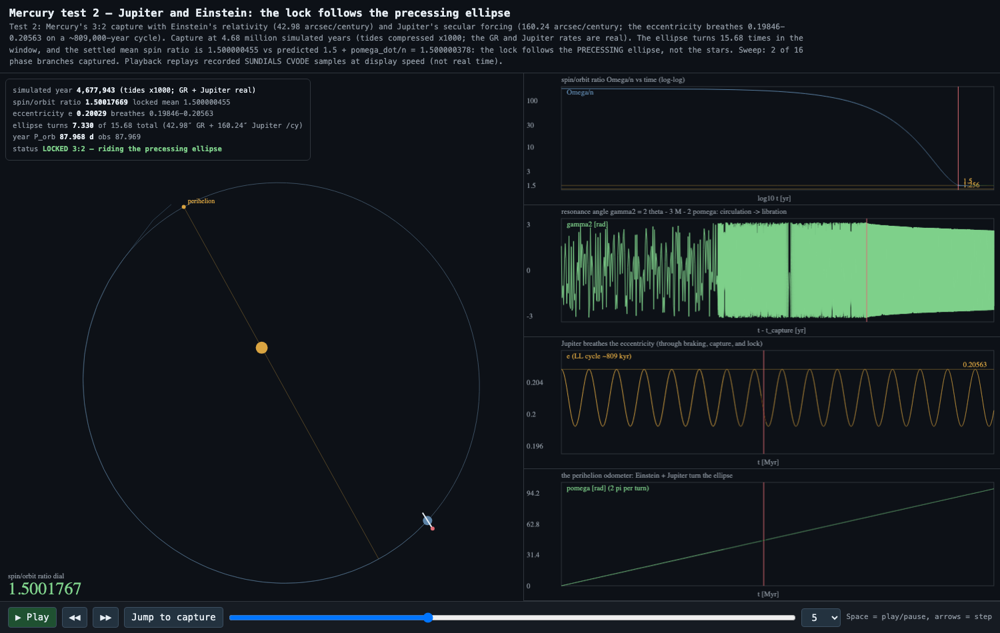
mercury_tidal_lockingMercury spins on its axis exactly three times for every two trips around the Sun — a "3:2 spin-orbit resonance," which is Mercury's strange form of tidal locking (our Moon, by contrast, is locked 1:1 and always shows Earth one face). This notebook simulates how that happened: the Sun's tides slowly braked Mercury's once-fast spin over billions of years, until the Sun's gravitational grip on Mercury's slightly lopsided shape snapped the spin into step as it fell through the 3:2 ratio.
SolveIt_Notebooks_for_rust/01_planet_mercury_tidal_locking/mercury_tidal_locking/mercury_tidal_locking.ipynb (header cell prepended: run commands, GUI commands, movies, data access, full player script)planet_Mercury/notebook/mercury_tidal_locking.ipynbplanet_Mercury/data/mercury_orbit.sqlite3 (SQLite)python3 SolveIt_Notebooks_for_rust/01_planet_mercury_tidal_locking/mercury_tidal_locking/player_mercury_tidal_locking.py run|gui|jump|capture out.png|data outdir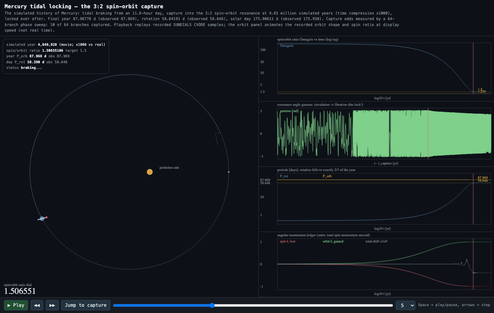
The SolveIt worked examples: each notebook drives the posim simulator (pure-Rust SUNDIALS backend) through one classic physics problem with closed-form answers checked in the transcript.
solveit_01_elastic_head_onThis notebook is one half of a pair. The other half is the example file scripts/solveit/01_elastic_head_on.posim in this repository, which contains the same simulation written directly in the simulator's own command language. This notebook runs that same simulation from Python, and explains every line of it.
SolveIt_Notebooks_for_rust/02_solveit_worked_examples/solveit_01_elastic_head_on/solveit_01_elastic_head_on.ipynb (header cell prepended: run commands, GUI commands, movies, data access, full player script)rustSolveIt_macos-silicon_SUNDIALS_7_8_0/notebooks/solveit_01_elastic_head_on.ipynbrustSolveIt_macos-silicon_SUNDIALS_7_8_0/scripts/solveit/01_elastic_head_on.posimpython3 SolveIt_Notebooks_for_rust/02_solveit_worked_examples/solveit_01_elastic_head_on/player_solveit_01_elastic_head_on.py run|gui|jump|capture out.png|data outdir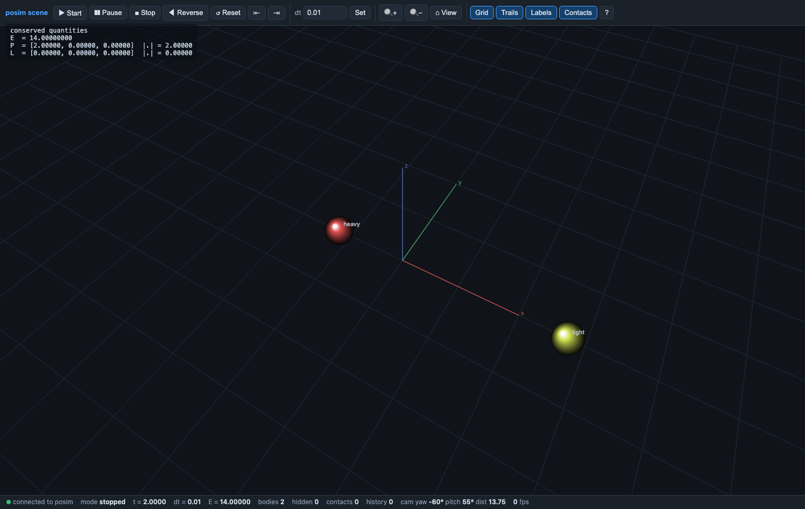
solveit_02_keplers_third_lawThis notebook is one half of a pair. The other half is the example file scripts/solveit/02_keplers_third_law.posim in this repository, which contains the same simulation written directly in the simulator's own command language. This notebook runs that same simulation from Python, and explains every line of it.
SolveIt_Notebooks_for_rust/02_solveit_worked_examples/solveit_02_keplers_third_law/solveit_02_keplers_third_law.ipynb (header cell prepended: run commands, GUI commands, movies, data access, full player script)rustSolveIt_macos-silicon_SUNDIALS_7_8_0/notebooks/solveit_02_keplers_third_law.ipynbrustSolveIt_macos-silicon_SUNDIALS_7_8_0/scripts/solveit/02_keplers_third_law.posimpython3 SolveIt_Notebooks_for_rust/02_solveit_worked_examples/solveit_02_keplers_third_law/player_solveit_02_keplers_third_law.py run|gui|jump|capture out.png|data outdir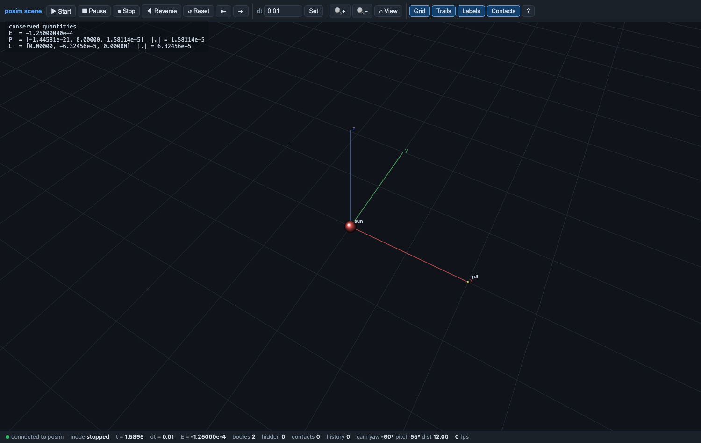
solveit_03_three_conicsThis notebook is one half of a pair. The other half is the example file scripts/solveit/03_three_conics.posim in this repository, which contains the same simulation written directly in the simulator's own command language. This notebook runs that same simulation from Python, and explains every line of it.
SolveIt_Notebooks_for_rust/02_solveit_worked_examples/solveit_03_three_conics/solveit_03_three_conics.ipynb (header cell prepended: run commands, GUI commands, movies, data access, full player script)rustSolveIt_macos-silicon_SUNDIALS_7_8_0/notebooks/solveit_03_three_conics.ipynbrustSolveIt_macos-silicon_SUNDIALS_7_8_0/scripts/solveit/03_three_conics.posimpython3 SolveIt_Notebooks_for_rust/02_solveit_worked_examples/solveit_03_three_conics/player_solveit_03_three_conics.py run|gui|jump|capture out.png|data outdir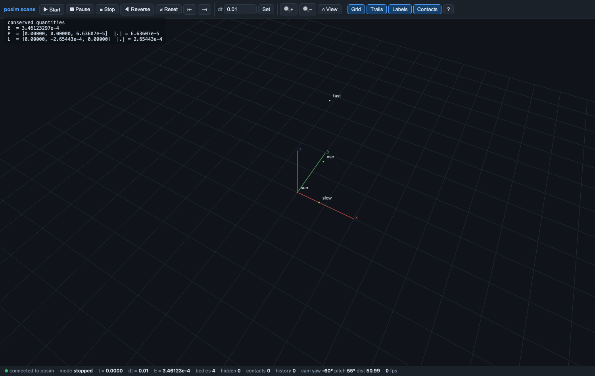
solveit_04_restitution_ladderThis notebook is one half of a pair. The other half is the example file scripts/solveit/04_restitution_ladder.posim in this repository, which contains the same simulation written directly in the simulator's own command language. This notebook runs that same simulation from Python, and explains every line of it.
SolveIt_Notebooks_for_rust/02_solveit_worked_examples/solveit_04_restitution_ladder/solveit_04_restitution_ladder.ipynb (header cell prepended: run commands, GUI commands, movies, data access, full player script)rustSolveIt_macos-silicon_SUNDIALS_7_8_0/notebooks/solveit_04_restitution_ladder.ipynbrustSolveIt_macos-silicon_SUNDIALS_7_8_0/scripts/solveit/04_restitution_ladder.posimpython3 SolveIt_Notebooks_for_rust/02_solveit_worked_examples/solveit_04_restitution_ladder/player_solveit_04_restitution_ladder.py run|gui|jump|capture out.png|data outdir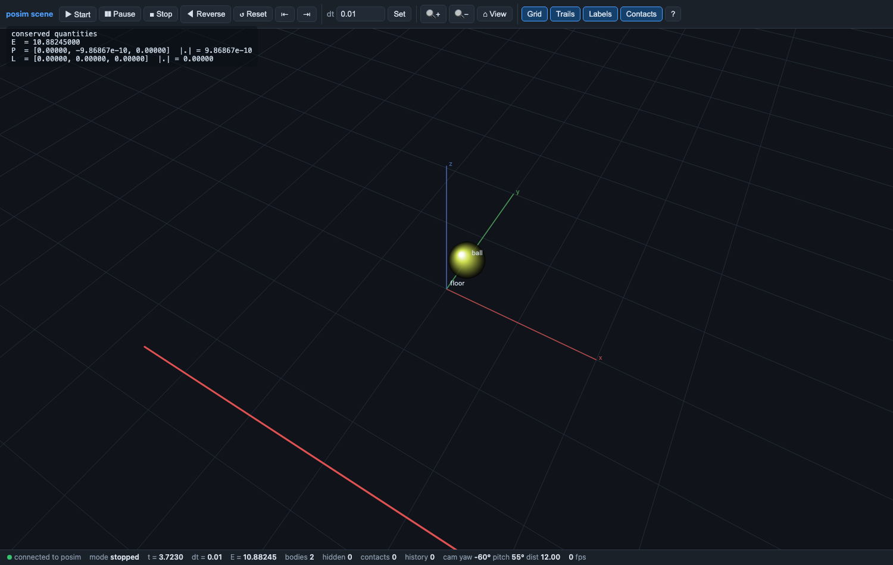
solveit_05_cyclotron_bdfThis notebook is one half of a pair. The other half is the example file scripts/solveit/05_cyclotron_bdf.posim in this repository, which contains the same simulation written directly in the simulator's own command language. This notebook runs that same simulation from Python, and explains every line of it.
SolveIt_Notebooks_for_rust/02_solveit_worked_examples/solveit_05_cyclotron_bdf/solveit_05_cyclotron_bdf.ipynb (header cell prepended: run commands, GUI commands, movies, data access, full player script)rustSolveIt_macos-silicon_SUNDIALS_7_8_0/notebooks/solveit_05_cyclotron_bdf.ipynbrustSolveIt_macos-silicon_SUNDIALS_7_8_0/scripts/solveit/05_cyclotron_bdf.posimpython3 SolveIt_Notebooks_for_rust/02_solveit_worked_examples/solveit_05_cyclotron_bdf/player_solveit_05_cyclotron_bdf.py run|gui|jump|capture out.png|data outdir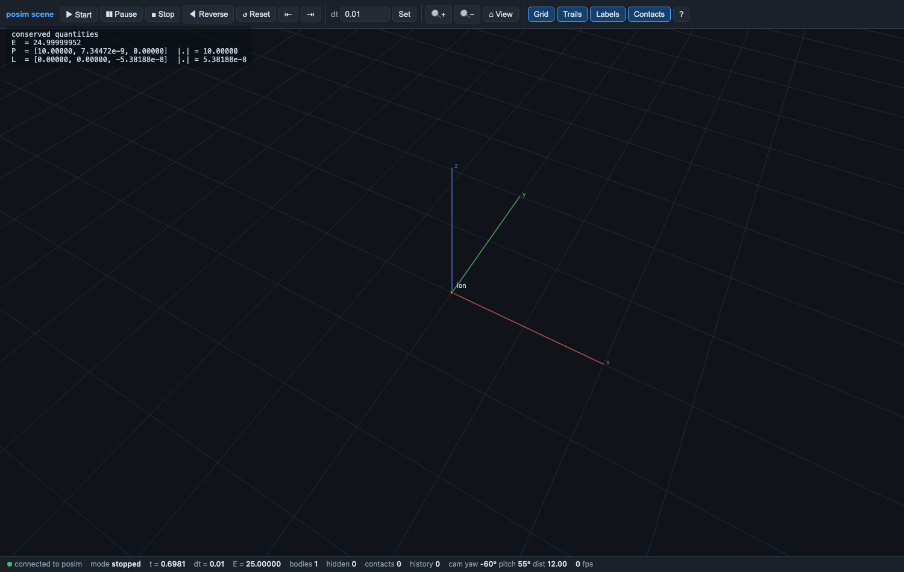
solveit_06_symplectic_vs_adaptiveThis notebook is one half of a pair. The other half is the example file scripts/solveit/06_symplectic_vs_adaptive.posim in this repository, which contains the same simulation written directly in the simulator's own command language. This notebook runs that same simulation from Python, and explains every line of it.
SolveIt_Notebooks_for_rust/02_solveit_worked_examples/solveit_06_symplectic_vs_adaptive/solveit_06_symplectic_vs_adaptive.ipynb (header cell prepended: run commands, GUI commands, movies, data access, full player script)rustSolveIt_macos-silicon_SUNDIALS_7_8_0/notebooks/solveit_06_symplectic_vs_adaptive.ipynbrustSolveIt_macos-silicon_SUNDIALS_7_8_0/scripts/solveit/06_symplectic_vs_adaptive.posimpython3 SolveIt_Notebooks_for_rust/02_solveit_worked_examples/solveit_06_symplectic_vs_adaptive/player_solveit_06_symplectic_vs_adaptive.py run|gui|jump|capture out.png|data outdirsolveit_07_dzhanibekovThis notebook is one half of a pair. The other half is the example file scripts/solveit/07_dzhanibekov.posim in this repository, which contains the same simulation written directly in the simulator's own command language. This notebook runs that same simulation from Python, and explains every line of it.
SolveIt_Notebooks_for_rust/02_solveit_worked_examples/solveit_07_dzhanibekov/solveit_07_dzhanibekov.ipynb (header cell prepended: run commands, GUI commands, movies, data access, full player script)rustSolveIt_macos-silicon_SUNDIALS_7_8_0/notebooks/solveit_07_dzhanibekov.ipynbrustSolveIt_macos-silicon_SUNDIALS_7_8_0/scripts/solveit/07_dzhanibekov.posimpython3 SolveIt_Notebooks_for_rust/02_solveit_worked_examples/solveit_07_dzhanibekov/player_solveit_07_dzhanibekov.py run|gui|jump|capture out.png|data outdirsolveit_08_magnetic_torqueThis notebook is one half of a pair. The other half is the example file scripts/solveit/08_magnetic_torque.posim in this repository, which contains the same simulation written directly in the simulator's own command language. This notebook runs that same simulation from Python, and explains every line of it.
SolveIt_Notebooks_for_rust/02_solveit_worked_examples/solveit_08_magnetic_torque/solveit_08_magnetic_torque.ipynb (header cell prepended: run commands, GUI commands, movies, data access, full player script)rustSolveIt_macos-silicon_SUNDIALS_7_8_0/notebooks/solveit_08_magnetic_torque.ipynbrustSolveIt_macos-silicon_SUNDIALS_7_8_0/scripts/solveit/08_magnetic_torque.posimpython3 SolveIt_Notebooks_for_rust/02_solveit_worked_examples/solveit_08_magnetic_torque/player_solveit_08_magnetic_torque.py run|gui|jump|capture out.png|data outdirsolveit_09_newtons_cradleThis notebook is one half of a pair. The other half is the example file scripts/solveit/09_newtons_cradle.posim in this repository, which contains the same simulation written directly in the simulator's own command language. This notebook runs that same simulation from Python, and explains every line of it.
SolveIt_Notebooks_for_rust/02_solveit_worked_examples/solveit_09_newtons_cradle/solveit_09_newtons_cradle.ipynb (header cell prepended: run commands, GUI commands, movies, data access, full player script)rustSolveIt_macos-silicon_SUNDIALS_7_8_0/notebooks/solveit_09_newtons_cradle.ipynbrustSolveIt_macos-silicon_SUNDIALS_7_8_0/scripts/solveit/09_newtons_cradle.posimpython3 SolveIt_Notebooks_for_rust/02_solveit_worked_examples/solveit_09_newtons_cradle/player_solveit_09_newtons_cradle.py run|gui|jump|capture out.png|data outdir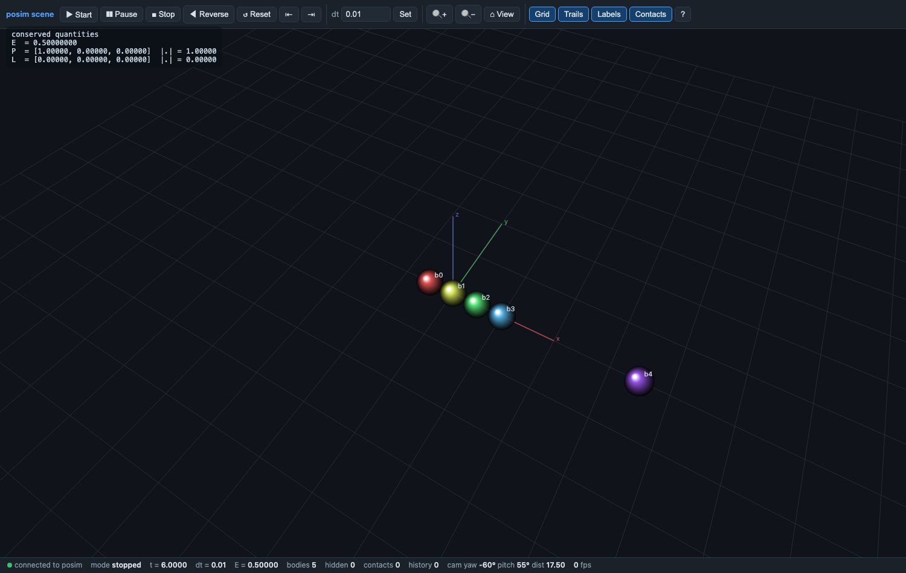
solveit_10_no_tunnellingThis notebook is one half of a pair. The other half is the example file scripts/solveit/10_no_tunnelling.posim in this repository, which contains the same simulation written directly in the simulator's own command language. This notebook runs that same simulation from Python, and explains every line of it.
SolveIt_Notebooks_for_rust/02_solveit_worked_examples/solveit_10_no_tunnelling/solveit_10_no_tunnelling.ipynb (header cell prepended: run commands, GUI commands, movies, data access, full player script)rustSolveIt_macos-silicon_SUNDIALS_7_8_0/notebooks/solveit_10_no_tunnelling.ipynbrustSolveIt_macos-silicon_SUNDIALS_7_8_0/scripts/solveit/10_no_tunnelling.posimpython3 SolveIt_Notebooks_for_rust/02_solveit_worked_examples/solveit_10_no_tunnelling/player_solveit_10_no_tunnelling.py run|gui|jump|capture out.png|data outdir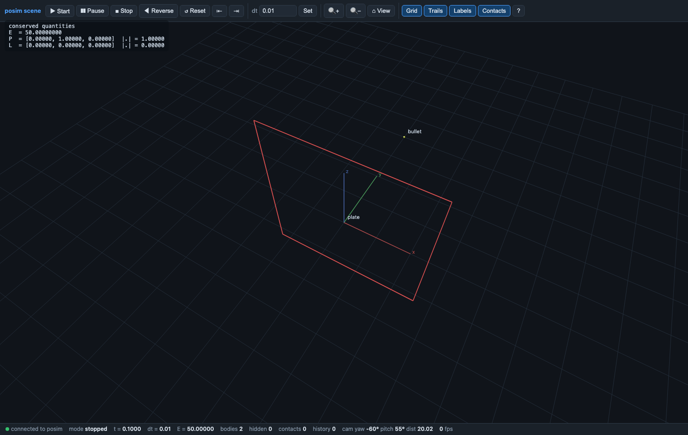
solveit_11_lagrange_l4This notebook is one half of a pair. The other half is the example file scripts/solveit/11_lagrange_l4.posim in this repository, which contains the same simulation written directly in the simulator's own command language. This notebook runs that same simulation from Python, and explains every line of it.
SolveIt_Notebooks_for_rust/02_solveit_worked_examples/solveit_11_lagrange_l4/solveit_11_lagrange_l4.ipynb (header cell prepended: run commands, GUI commands, movies, data access, full player script)rustSolveIt_macos-silicon_SUNDIALS_7_8_0/notebooks/solveit_11_lagrange_l4.ipynbrustSolveIt_macos-silicon_SUNDIALS_7_8_0/scripts/solveit/11_lagrange_l4.posimpython3 SolveIt_Notebooks_for_rust/02_solveit_worked_examples/solveit_11_lagrange_l4/player_solveit_11_lagrange_l4.py run|gui|jump|capture out.png|data outdir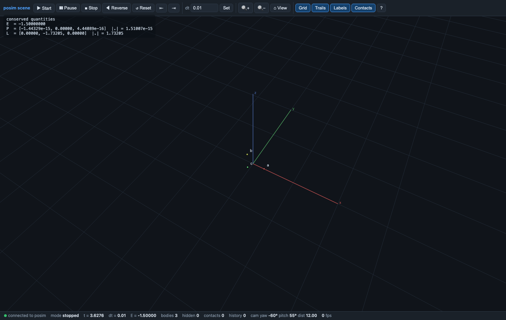
solveit_12_dumbbell_inertiaThis notebook is one half of a pair. The other half is the example file scripts/solveit/12_dumbbell_inertia.posim in this repository, which contains the same simulation written directly in the simulator's own command language. This notebook runs that same simulation from Python, and explains every line of it.
SolveIt_Notebooks_for_rust/02_solveit_worked_examples/solveit_12_dumbbell_inertia/solveit_12_dumbbell_inertia.ipynb (header cell prepended: run commands, GUI commands, movies, data access, full player script)rustSolveIt_macos-silicon_SUNDIALS_7_8_0/notebooks/solveit_12_dumbbell_inertia.ipynbrustSolveIt_macos-silicon_SUNDIALS_7_8_0/scripts/solveit/12_dumbbell_inertia.posimpython3 SolveIt_Notebooks_for_rust/02_solveit_worked_examples/solveit_12_dumbbell_inertia/player_solveit_12_dumbbell_inertia.py run|gui|jump|capture out.png|data outdir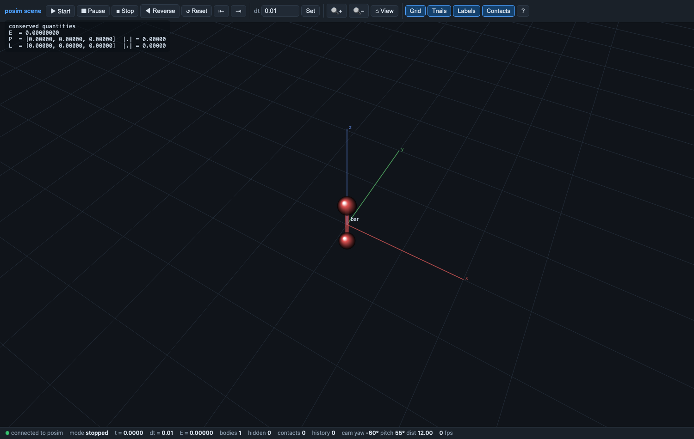
solveit_13_tilted_torusThis notebook is one half of a pair. The other half is the example file scripts/solveit/13_tilted_torus.posim in this repository, which contains the same simulation written directly in the simulator's own command language. This notebook runs that same simulation from Python, and explains every line of it.
SolveIt_Notebooks_for_rust/02_solveit_worked_examples/solveit_13_tilted_torus/solveit_13_tilted_torus.ipynb (header cell prepended: run commands, GUI commands, movies, data access, full player script)rustSolveIt_macos-silicon_SUNDIALS_7_8_0/notebooks/solveit_13_tilted_torus.ipynbrustSolveIt_macos-silicon_SUNDIALS_7_8_0/scripts/solveit/13_tilted_torus.posimpython3 SolveIt_Notebooks_for_rust/02_solveit_worked_examples/solveit_13_tilted_torus/player_solveit_13_tilted_torus.py run|gui|jump|capture out.png|data outdir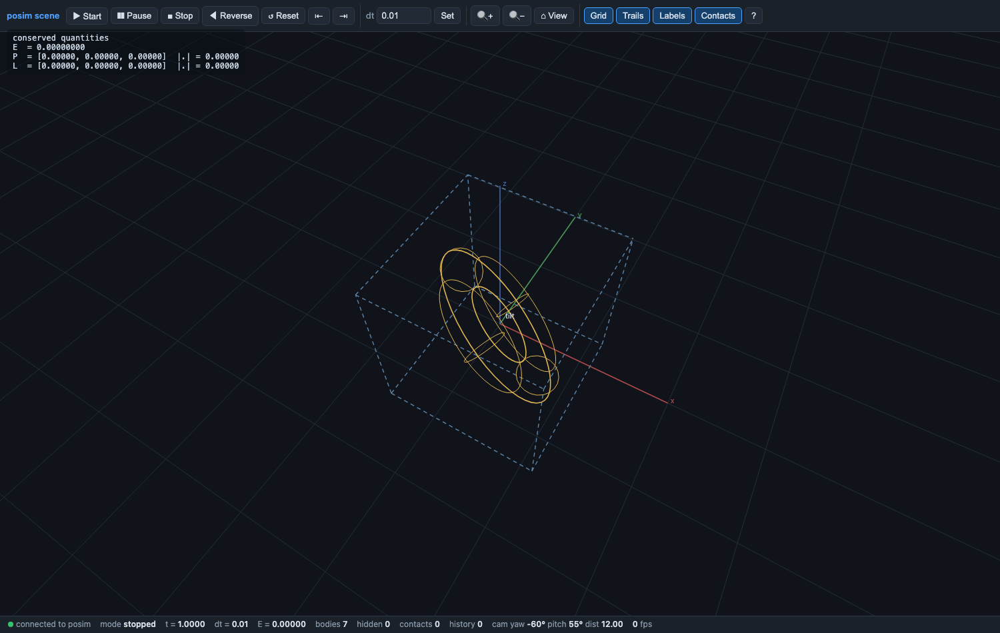
solveit_14_particle_in_a_boxThis notebook is one half of a pair. The other half is the example file scripts/solveit/14_particle_in_a_box.posim in this repository, which contains the same simulation written directly in the simulator's own command language. This notebook runs that same simulation from Python, and explains every line of it.
SolveIt_Notebooks_for_rust/02_solveit_worked_examples/solveit_14_particle_in_a_box/solveit_14_particle_in_a_box.ipynb (header cell prepended: run commands, GUI commands, movies, data access, full player script)rustSolveIt_macos-silicon_SUNDIALS_7_8_0/notebooks/solveit_14_particle_in_a_box.ipynbrustSolveIt_macos-silicon_SUNDIALS_7_8_0/scripts/solveit/14_particle_in_a_box.posimpython3 SolveIt_Notebooks_for_rust/02_solveit_worked_examples/solveit_14_particle_in_a_box/player_solveit_14_particle_in_a_box.py run|gui|jump|capture out.png|data outdir
solveit_15_tunnellingThis notebook is one half of a pair. The other half is the example file scripts/solveit/15_tunnelling.posim in this repository, which contains the same simulation written directly in the simulator's own command language. This notebook runs that same simulation from Python, and explains every line of it.
SolveIt_Notebooks_for_rust/02_solveit_worked_examples/solveit_15_tunnelling/solveit_15_tunnelling.ipynb (header cell prepended: run commands, GUI commands, movies, data access, full player script)rustSolveIt_macos-silicon_SUNDIALS_7_8_0/notebooks/solveit_15_tunnelling.ipynbrustSolveIt_macos-silicon_SUNDIALS_7_8_0/scripts/solveit/15_tunnelling.posimpython3 SolveIt_Notebooks_for_rust/02_solveit_worked_examples/solveit_15_tunnelling/player_solveit_15_tunnelling.py run|gui|jump|capture out.png|data outdir
solveit_16_special_functionsThis notebook is one half of a pair. The other half is the example file scripts/solveit/16_special_functions.posim in this repository, which contains the same simulation written directly in the simulator's own command language. This notebook runs that same simulation from Python, and explains every line of it.
SolveIt_Notebooks_for_rust/02_solveit_worked_examples/solveit_16_special_functions/solveit_16_special_functions.ipynb (header cell prepended: run commands, GUI commands, movies, data access, full player script)rustSolveIt_macos-silicon_SUNDIALS_7_8_0/notebooks/solveit_16_special_functions.ipynbrustSolveIt_macos-silicon_SUNDIALS_7_8_0/scripts/solveit/16_special_functions.posimpython3 SolveIt_Notebooks_for_rust/02_solveit_worked_examples/solveit_16_special_functions/player_solveit_16_special_functions.py run|gui|jump|capture out.png|data outdir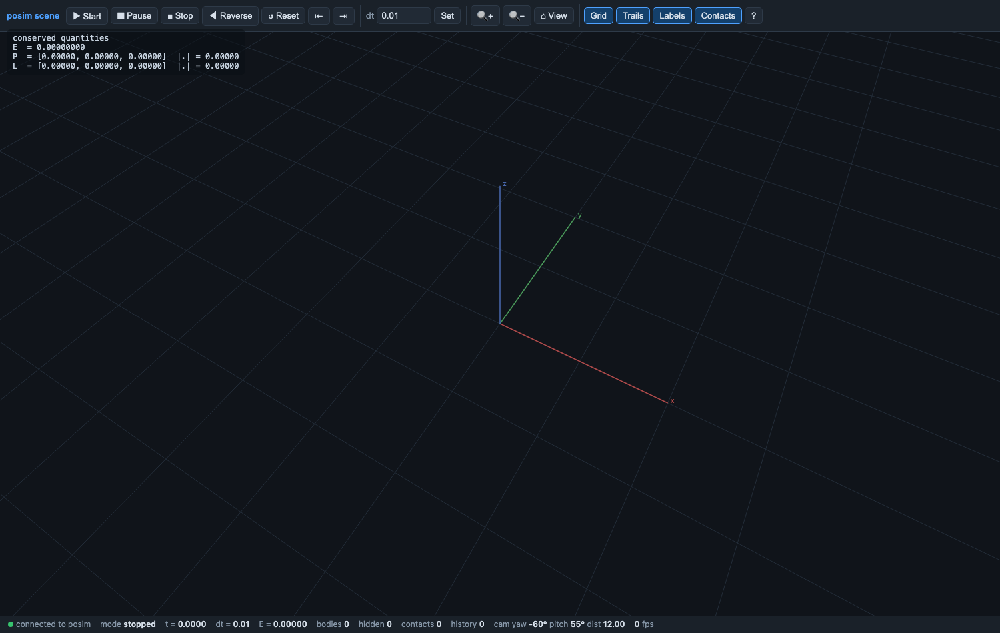
solveit_17_pendulum_daeThis notebook is one half of a pair. The other half is the example file scripts/solveit/17_pendulum_dae.posim in this repository, which contains the same simulation written directly in the simulator's own command language. This notebook runs that same simulation from Python, and explains every line of it.
SolveIt_Notebooks_for_rust/02_solveit_worked_examples/solveit_17_pendulum_dae/solveit_17_pendulum_dae.ipynb (header cell prepended: run commands, GUI commands, movies, data access, full player script)rustSolveIt_macos-silicon_SUNDIALS_7_8_0/notebooks/solveit_17_pendulum_dae.ipynbrustSolveIt_macos-silicon_SUNDIALS_7_8_0/scripts/solveit/17_pendulum_dae.posimpython3 SolveIt_Notebooks_for_rust/02_solveit_worked_examples/solveit_17_pendulum_dae/player_solveit_17_pendulum_dae.py run|gui|jump|capture out.png|data outdirsolveit_18_equilibrium_and_sensitivityThis notebook is one half of a pair. The other half is the example file scripts/solveit/18_equilibrium_and_sensitivity.posim in this repository, which contains the same simulation written directly in the simulator's own command language. This notebook runs that same simulation from Python, and explains every line of it.
SolveIt_Notebooks_for_rust/02_solveit_worked_examples/solveit_18_equilibrium_and_sensitivity/solveit_18_equilibrium_and_sensitivity.ipynb (header cell prepended: run commands, GUI commands, movies, data access, full player script)rustSolveIt_macos-silicon_SUNDIALS_7_8_0/notebooks/solveit_18_equilibrium_and_sensitivity.ipynbrustSolveIt_macos-silicon_SUNDIALS_7_8_0/scripts/solveit/18_equilibrium_and_sensitivity.posimpython3 SolveIt_Notebooks_for_rust/02_solveit_worked_examples/solveit_18_equilibrium_and_sensitivity/player_solveit_18_equilibrium_and_sensitivity.py run|gui|jump|capture out.png|data outdir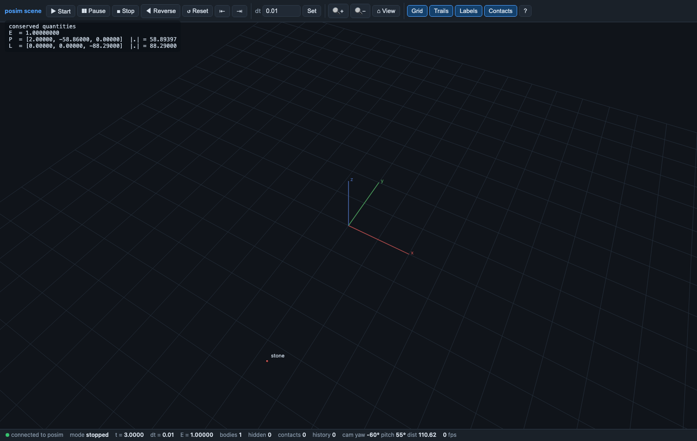
solveit_19_hinged_doorThis notebook is one half of a pair. The other half is the example file scripts/solveit/19_hinged_door.posim in this repository, which contains the same simulation written directly in the simulator's own command language. This notebook runs that same simulation from Python, and explains every line of it.
SolveIt_Notebooks_for_rust/02_solveit_worked_examples/solveit_19_hinged_door/solveit_19_hinged_door.ipynb (header cell prepended: run commands, GUI commands, movies, data access, full player script)rustSolveIt_macos-silicon_SUNDIALS_7_8_0/notebooks/solveit_19_hinged_door.ipynbrustSolveIt_macos-silicon_SUNDIALS_7_8_0/scripts/solveit/19_hinged_door.posimpython3 SolveIt_Notebooks_for_rust/02_solveit_worked_examples/solveit_19_hinged_door/player_solveit_19_hinged_door.py run|gui|jump|capture out.png|data outdir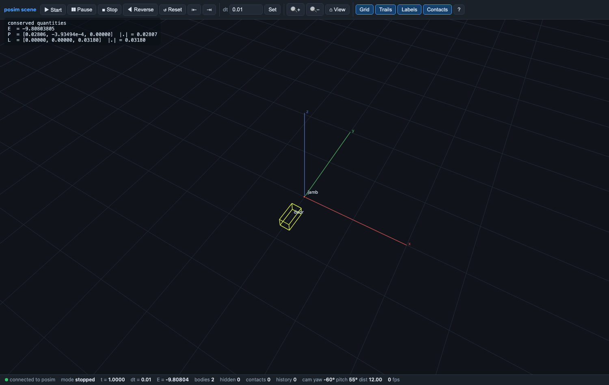
The dynamic notebooks — free rigid-body motion, charged particles in fields, orbital mechanics, and the 34 Routh rigid-body problems — each a machine-mode posim session with its analytic checks.
dynamic_billiard_boxThis notebook is one half of a pair. The other half is the example file dynamic_notebooks/billiard_box.posim in this repository, which contains the same simulation written directly in the simulator's own command language. This notebook runs that same simulation from Python, and explains every line of it.
SolveIt_Notebooks_for_rust/03_dynamics_and_routh/dynamic_billiard_box/dynamic_billiard_box.ipynb (header cell prepended: run commands, GUI commands, movies, data access, full player script)rustSolveIt_macos-silicon_SUNDIALS_7_8_0/notebooks/dynamic_billiard_box.ipynbrustSolveIt_macos-silicon_SUNDIALS_7_8_0/dynamic_notebooks/billiard_box.posimpython3 SolveIt_Notebooks_for_rust/03_dynamics_and_routh/dynamic_billiard_box/player_dynamic_billiard_box.py run|gui|jump|capture out.png|data outdir
dynamic_billiard_breakThis notebook is one half of a pair. The other half is the example file dynamic_notebooks/billiard_break.posim in this repository, which contains the same simulation written directly in the simulator's own command language. This notebook runs that same simulation from Python, and explains every line of it.
SolveIt_Notebooks_for_rust/03_dynamics_and_routh/dynamic_billiard_break/dynamic_billiard_break.ipynb (header cell prepended: run commands, GUI commands, movies, data access, full player script)rustSolveIt_macos-silicon_SUNDIALS_7_8_0/notebooks/dynamic_billiard_break.ipynbrustSolveIt_macos-silicon_SUNDIALS_7_8_0/dynamic_notebooks/billiard_break.posimpython3 SolveIt_Notebooks_for_rust/03_dynamics_and_routh/dynamic_billiard_break/player_dynamic_billiard_break.py run|gui|jump|capture out.png|data outdir
dynamic_bouncing_ball_restitutionThis notebook is one half of a pair. The other half is the example file dynamic_notebooks/bouncing_ball_restitution.posim in this repository, which contains the same simulation written directly in the simulator's own command language. This notebook runs that same simulation from Python, and explains every line of it.
SolveIt_Notebooks_for_rust/03_dynamics_and_routh/dynamic_bouncing_ball_restitution/dynamic_bouncing_ball_restitution.ipynb (header cell prepended: run commands, GUI commands, movies, data access, full player script)rustSolveIt_macos-silicon_SUNDIALS_7_8_0/notebooks/dynamic_bouncing_ball_restitution.ipynbrustSolveIt_macos-silicon_SUNDIALS_7_8_0/dynamic_notebooks/bouncing_ball_restitution.posimpython3 SolveIt_Notebooks_for_rust/03_dynamics_and_routh/dynamic_bouncing_ball_restitution/player_dynamic_bouncing_ball_restitution.py run|gui|jump|capture out.png|data outdir
dynamic_box_of_shapesThis notebook is one half of a pair. The other half is the example file dynamic_notebooks/box_of_shapes.posim in this repository, which contains the same simulation written directly in the simulator's own command language. This notebook runs that same simulation from Python, and explains every line of it.
SolveIt_Notebooks_for_rust/03_dynamics_and_routh/dynamic_box_of_shapes/dynamic_box_of_shapes.ipynb (header cell prepended: run commands, GUI commands, movies, data access, full player script)rustSolveIt_macos-silicon_SUNDIALS_7_8_0/notebooks/dynamic_box_of_shapes.ipynbrustSolveIt_macos-silicon_SUNDIALS_7_8_0/dynamic_notebooks/box_of_shapes.posimpython3 SolveIt_Notebooks_for_rust/03_dynamics_and_routh/dynamic_box_of_shapes/player_dynamic_box_of_shapes.py run|gui|jump|capture out.png|data outdir
dynamic_box_of_shapes_m32This notebook is one half of a pair. The other half is the example file dynamic_notebooks/box_of_shapes_m32.posim in this repository, which contains the same simulation written directly in the simulator's own command language. This notebook runs that same simulation from Python, and explains every line of it.
SolveIt_Notebooks_for_rust/03_dynamics_and_routh/dynamic_box_of_shapes_m32/dynamic_box_of_shapes_m32.ipynb (header cell prepended: run commands, GUI commands, movies, data access, full player script)rustSolveIt_macos-silicon_SUNDIALS_7_8_0/notebooks/dynamic_box_of_shapes_m32.ipynbrustSolveIt_macos-silicon_SUNDIALS_7_8_0/dynamic_notebooks/box_of_shapes_m32.posimpython3 SolveIt_Notebooks_for_rust/03_dynamics_and_routh/dynamic_box_of_shapes_m32/player_dynamic_box_of_shapes_m32.py run|gui|jump|capture out.png|data outdir
dynamic_charged_in_b_fieldThis notebook is one half of a pair. The other half is the example file dynamic_notebooks/charged_in_b_field.posim in this repository, which contains the same simulation written directly in the simulator's own command language. This notebook runs that same simulation from Python, and explains every line of it.
SolveIt_Notebooks_for_rust/03_dynamics_and_routh/dynamic_charged_in_b_field/dynamic_charged_in_b_field.ipynb (header cell prepended: run commands, GUI commands, movies, data access, full player script)rustSolveIt_macos-silicon_SUNDIALS_7_8_0/notebooks/dynamic_charged_in_b_field.ipynbrustSolveIt_macos-silicon_SUNDIALS_7_8_0/dynamic_notebooks/charged_in_b_field.posimpython3 SolveIt_Notebooks_for_rust/03_dynamics_and_routh/dynamic_charged_in_b_field/player_dynamic_charged_in_b_field.py run|gui|jump|capture out.png|data outdir
dynamic_charged_in_e_fieldThis notebook is one half of a pair. The other half is the example file dynamic_notebooks/charged_in_e_field.posim in this repository, which contains the same simulation written directly in the simulator's own command language. This notebook runs that same simulation from Python, and explains every line of it.
SolveIt_Notebooks_for_rust/03_dynamics_and_routh/dynamic_charged_in_e_field/dynamic_charged_in_e_field.ipynb (header cell prepended: run commands, GUI commands, movies, data access, full player script)rustSolveIt_macos-silicon_SUNDIALS_7_8_0/notebooks/dynamic_charged_in_e_field.ipynbrustSolveIt_macos-silicon_SUNDIALS_7_8_0/dynamic_notebooks/charged_in_e_field.posimpython3 SolveIt_Notebooks_for_rust/03_dynamics_and_routh/dynamic_charged_in_e_field/player_dynamic_charged_in_e_field.py run|gui|jump|capture out.png|data outdir
dynamic_colliding_binaryThis notebook is one half of a pair. The other half is the example file dynamic_notebooks/colliding_binary.posim in this repository, which contains the same simulation written directly in the simulator's own command language. This notebook runs that same simulation from Python, and explains every line of it.
SolveIt_Notebooks_for_rust/03_dynamics_and_routh/dynamic_colliding_binary/dynamic_colliding_binary.ipynb (header cell prepended: run commands, GUI commands, movies, data access, full player script)rustSolveIt_macos-silicon_SUNDIALS_7_8_0/notebooks/dynamic_colliding_binary.ipynbrustSolveIt_macos-silicon_SUNDIALS_7_8_0/dynamic_notebooks/colliding_binary.posimpython3 SolveIt_Notebooks_for_rust/03_dynamics_and_routh/dynamic_colliding_binary/player_dynamic_colliding_binary.py run|gui|jump|capture out.png|data outdir
dynamic_double_slitThis notebook is one half of a pair. The other half is the example file dynamic_notebooks/double_slit.posim in this repository, which contains the same simulation written directly in the simulator's own command language. This notebook runs that same simulation from Python, and explains every line of it.
SolveIt_Notebooks_for_rust/03_dynamics_and_routh/dynamic_double_slit/dynamic_double_slit.ipynb (header cell prepended: run commands, GUI commands, movies, data access, full player script)rustSolveIt_macos-silicon_SUNDIALS_7_8_0/notebooks/dynamic_double_slit.ipynbrustSolveIt_macos-silicon_SUNDIALS_7_8_0/dynamic_notebooks/double_slit.posimpython3 SolveIt_Notebooks_for_rust/03_dynamics_and_routh/dynamic_double_slit/player_dynamic_double_slit.py run|gui|jump|capture out.png|data outdir
dynamic_head_on_exchangeThis notebook is one half of a pair. The other half is the example file dynamic_notebooks/head_on_exchange.posim in this repository, which contains the same simulation written directly in the simulator's own command language. This notebook runs that same simulation from Python, and explains every line of it.
SolveIt_Notebooks_for_rust/03_dynamics_and_routh/dynamic_head_on_exchange/dynamic_head_on_exchange.ipynb (header cell prepended: run commands, GUI commands, movies, data access, full player script)rustSolveIt_macos-silicon_SUNDIALS_7_8_0/notebooks/dynamic_head_on_exchange.ipynbrustSolveIt_macos-silicon_SUNDIALS_7_8_0/dynamic_notebooks/head_on_exchange.posimpython3 SolveIt_Notebooks_for_rust/03_dynamics_and_routh/dynamic_head_on_exchange/player_dynamic_head_on_exchange.py run|gui|jump|capture out.png|data outdir
dynamic_kepler_orbitThis notebook is one half of a pair. The other half is the example file dynamic_notebooks/kepler_orbit.posim in this repository, which contains the same simulation written directly in the simulator's own command language. This notebook runs that same simulation from Python, and explains every line of it.
SolveIt_Notebooks_for_rust/03_dynamics_and_routh/dynamic_kepler_orbit/dynamic_kepler_orbit.ipynb (header cell prepended: run commands, GUI commands, movies, data access, full player script)rustSolveIt_macos-silicon_SUNDIALS_7_8_0/notebooks/dynamic_kepler_orbit.ipynbrustSolveIt_macos-silicon_SUNDIALS_7_8_0/dynamic_notebooks/kepler_orbit.posimpython3 SolveIt_Notebooks_for_rust/03_dynamics_and_routh/dynamic_kepler_orbit/player_dynamic_kepler_orbit.py run|gui|jump|capture out.png|data outdir
dynamic_magnetic_spin_upThis notebook is one half of a pair. The other half is the example file dynamic_notebooks/magnetic_spin_up.posim in this repository, which contains the same simulation written directly in the simulator's own command language. This notebook runs that same simulation from Python, and explains every line of it.
SolveIt_Notebooks_for_rust/03_dynamics_and_routh/dynamic_magnetic_spin_up/dynamic_magnetic_spin_up.ipynb (header cell prepended: run commands, GUI commands, movies, data access, full player script)rustSolveIt_macos-silicon_SUNDIALS_7_8_0/notebooks/dynamic_magnetic_spin_up.ipynbrustSolveIt_macos-silicon_SUNDIALS_7_8_0/dynamic_notebooks/magnetic_spin_up.posimpython3 SolveIt_Notebooks_for_rust/03_dynamics_and_routh/dynamic_magnetic_spin_up/player_dynamic_magnetic_spin_up.py run|gui|jump|capture out.png|data outdir
dynamic_newtons_cradleThis notebook is one half of a pair. The other half is the example file dynamic_notebooks/newtons_cradle.posim in this repository, which contains the same simulation written directly in the simulator's own command language. This notebook runs that same simulation from Python, and explains every line of it.
SolveIt_Notebooks_for_rust/03_dynamics_and_routh/dynamic_newtons_cradle/dynamic_newtons_cradle.ipynb (header cell prepended: run commands, GUI commands, movies, data access, full player script)rustSolveIt_macos-silicon_SUNDIALS_7_8_0/notebooks/dynamic_newtons_cradle.ipynbrustSolveIt_macos-silicon_SUNDIALS_7_8_0/dynamic_notebooks/newtons_cradle.posimpython3 SolveIt_Notebooks_for_rust/03_dynamics_and_routh/dynamic_newtons_cradle/player_dynamic_newtons_cradle.py run|gui|jump|capture out.png|data outdir
dynamic_outer_solar_systemThis notebook is one half of a pair. The other half is the example file dynamic_notebooks/outer_solar_system.posim in this repository, which contains the same simulation written directly in the simulator's own command language. This notebook runs that same simulation from Python, and explains every line of it.
SolveIt_Notebooks_for_rust/03_dynamics_and_routh/dynamic_outer_solar_system/dynamic_outer_solar_system.ipynb (header cell prepended: run commands, GUI commands, movies, data access, full player script)rustSolveIt_macos-silicon_SUNDIALS_7_8_0/notebooks/dynamic_outer_solar_system.ipynbrustSolveIt_macos-silicon_SUNDIALS_7_8_0/dynamic_notebooks/outer_solar_system.posimpython3 SolveIt_Notebooks_for_rust/03_dynamics_and_routh/dynamic_outer_solar_system/player_dynamic_outer_solar_system.py run|gui|jump|capture out.png|data outdir
dynamic_restitution_ladderThis notebook is one half of a pair. The other half is the example file dynamic_notebooks/restitution_ladder.posim in this repository, which contains the same simulation written directly in the simulator's own command language. This notebook runs that same simulation from Python, and explains every line of it.
SolveIt_Notebooks_for_rust/03_dynamics_and_routh/dynamic_restitution_ladder/dynamic_restitution_ladder.ipynb (header cell prepended: run commands, GUI commands, movies, data access, full player script)rustSolveIt_macos-silicon_SUNDIALS_7_8_0/notebooks/dynamic_restitution_ladder.ipynbrustSolveIt_macos-silicon_SUNDIALS_7_8_0/dynamic_notebooks/restitution_ladder.posimpython3 SolveIt_Notebooks_for_rust/03_dynamics_and_routh/dynamic_restitution_ladder/player_dynamic_restitution_ladder.py run|gui|jump|capture out.png|data outdir
dynamic_routh_double_star_periodThis notebook is one half of a pair. The other half is the example file dynamic_notebooks/routh_double_star_period.posim in this repository, which contains the same simulation written directly in the simulator's own command language. This notebook runs that same simulation from Python, and explains every line of it.
SolveIt_Notebooks_for_rust/03_dynamics_and_routh/dynamic_routh_double_star_period/dynamic_routh_double_star_period.ipynb (header cell prepended: run commands, GUI commands, movies, data access, full player script)rustSolveIt_macos-silicon_SUNDIALS_7_8_0/notebooks/dynamic_routh_double_star_period.ipynbrustSolveIt_macos-silicon_SUNDIALS_7_8_0/dynamic_notebooks/routh_double_star_period.posimpython3 SolveIt_Notebooks_for_rust/03_dynamics_and_routh/dynamic_routh_double_star_period/player_dynamic_routh_double_star_period.py run|gui|jump|capture out.png|data outdir
dynamic_routh_p1_apsidal_symmetryThis notebook is one half of a pair. The other half is the example file dynamic_notebooks/routh_p1_apsidal_symmetry.posim in this repository, which contains the same simulation written directly in the simulator's own command language. This notebook runs that same simulation from Python, and explains every line of it.
SolveIt_Notebooks_for_rust/03_dynamics_and_routh/dynamic_routh_p1_apsidal_symmetry/dynamic_routh_p1_apsidal_symmetry.ipynb (header cell prepended: run commands, GUI commands, movies, data access, full player script)rustSolveIt_macos-silicon_SUNDIALS_7_8_0/notebooks/dynamic_routh_p1_apsidal_symmetry.ipynbrustSolveIt_macos-silicon_SUNDIALS_7_8_0/dynamic_notebooks/routh_p1_apsidal_symmetry.posimpython3 SolveIt_Notebooks_for_rust/03_dynamics_and_routh/dynamic_routh_p1_apsidal_symmetry/player_dynamic_routh_p1_apsidal_symmetry.py run|gui|jump|capture out.png|data outdir
dynamic_routh_p1_centre_of_gravityThis notebook is one half of a pair. The other half is the example file dynamic_notebooks/routh_p1_centre_of_gravity.posim in this repository, which contains the same simulation written directly in the simulator's own command language. This notebook runs that same simulation from Python, and explains every line of it.
SolveIt_Notebooks_for_rust/03_dynamics_and_routh/dynamic_routh_p1_centre_of_gravity/dynamic_routh_p1_centre_of_gravity.ipynb (header cell prepended: run commands, GUI commands, movies, data access, full player script)rustSolveIt_macos-silicon_SUNDIALS_7_8_0/notebooks/dynamic_routh_p1_centre_of_gravity.ipynbrustSolveIt_macos-silicon_SUNDIALS_7_8_0/dynamic_notebooks/routh_p1_centre_of_gravity.posimpython3 SolveIt_Notebooks_for_rust/03_dynamics_and_routh/dynamic_routh_p1_centre_of_gravity/player_dynamic_routh_p1_centre_of_gravity.py run|gui|jump|capture out.png|data outdir
dynamic_routh_p1_collinear_three_bodyThis notebook is one half of a pair. The other half is the example file dynamic_notebooks/routh_p1_collinear_three_body.posim in this repository, which contains the same simulation written directly in the simulator's own command language. This notebook runs that same simulation from Python, and explains every line of it.
SolveIt_Notebooks_for_rust/03_dynamics_and_routh/dynamic_routh_p1_collinear_three_body/dynamic_routh_p1_collinear_three_body.ipynb (header cell prepended: run commands, GUI commands, movies, data access, full player script)rustSolveIt_macos-silicon_SUNDIALS_7_8_0/notebooks/dynamic_routh_p1_collinear_three_body.ipynbrustSolveIt_macos-silicon_SUNDIALS_7_8_0/dynamic_notebooks/routh_p1_collinear_three_body.posimpython3 SolveIt_Notebooks_for_rust/03_dynamics_and_routh/dynamic_routh_p1_collinear_three_body/player_dynamic_routh_p1_collinear_three_body.py run|gui|jump|capture out.png|data outdir
dynamic_routh_p1_equal_periodsThis notebook is one half of a pair. The other half is the example file dynamic_notebooks/routh_p1_equal_periods.posim in this repository, which contains the same simulation written directly in the simulator's own command language. This notebook runs that same simulation from Python, and explains every line of it.
SolveIt_Notebooks_for_rust/03_dynamics_and_routh/dynamic_routh_p1_equal_periods/dynamic_routh_p1_equal_periods.ipynb (header cell prepended: run commands, GUI commands, movies, data access, full player script)rustSolveIt_macos-silicon_SUNDIALS_7_8_0/notebooks/dynamic_routh_p1_equal_periods.ipynbrustSolveIt_macos-silicon_SUNDIALS_7_8_0/dynamic_notebooks/routh_p1_equal_periods.posimpython3 SolveIt_Notebooks_for_rust/03_dynamics_and_routh/dynamic_routh_p1_equal_periods/player_dynamic_routh_p1_equal_periods.py run|gui|jump|capture out.png|data outdir
dynamic_routh_p1_equilateral_three_bodyThis notebook is one half of a pair. The other half is the example file dynamic_notebooks/routh_p1_equilateral_three_body.posim in this repository, which contains the same simulation written directly in the simulator's own command language. This notebook runs that same simulation from Python, and explains every line of it.
SolveIt_Notebooks_for_rust/03_dynamics_and_routh/dynamic_routh_p1_equilateral_three_body/dynamic_routh_p1_equilateral_three_body.ipynb (header cell prepended: run commands, GUI commands, movies, data access, full player script)rustSolveIt_macos-silicon_SUNDIALS_7_8_0/notebooks/dynamic_routh_p1_equilateral_three_body.ipynbrustSolveIt_macos-silicon_SUNDIALS_7_8_0/dynamic_notebooks/routh_p1_equilateral_three_body.posimpython3 SolveIt_Notebooks_for_rust/03_dynamics_and_routh/dynamic_routh_p1_equilateral_three_body/player_dynamic_routh_p1_equilateral_three_body.py run|gui|jump|capture out.png|data outdir
dynamic_routh_p1_escape_velocityThis notebook is one half of a pair. The other half is the example file dynamic_notebooks/routh_p1_escape_velocity.posim in this repository, which contains the same simulation written directly in the simulator's own command language. This notebook runs that same simulation from Python, and explains every line of it.
SolveIt_Notebooks_for_rust/03_dynamics_and_routh/dynamic_routh_p1_escape_velocity/dynamic_routh_p1_escape_velocity.ipynb (header cell prepended: run commands, GUI commands, movies, data access, full player script)rustSolveIt_macos-silicon_SUNDIALS_7_8_0/notebooks/dynamic_routh_p1_escape_velocity.ipynbrustSolveIt_macos-silicon_SUNDIALS_7_8_0/dynamic_notebooks/routh_p1_escape_velocity.posimpython3 SolveIt_Notebooks_for_rust/03_dynamics_and_routh/dynamic_routh_p1_escape_velocity/player_dynamic_routh_p1_escape_velocity.py run|gui|jump|capture out.png|data outdir
dynamic_routh_p1_expanding_sphereThis notebook is one half of a pair. The other half is the example file dynamic_notebooks/routh_p1_expanding_sphere.posim in this repository, which contains the same simulation written directly in the simulator's own command language. This notebook runs that same simulation from Python, and explains every line of it.
SolveIt_Notebooks_for_rust/03_dynamics_and_routh/dynamic_routh_p1_expanding_sphere/dynamic_routh_p1_expanding_sphere.ipynb (header cell prepended: run commands, GUI commands, movies, data access, full player script)rustSolveIt_macos-silicon_SUNDIALS_7_8_0/notebooks/dynamic_routh_p1_expanding_sphere.ipynbrustSolveIt_macos-silicon_SUNDIALS_7_8_0/dynamic_notebooks/routh_p1_expanding_sphere.posimpython3 SolveIt_Notebooks_for_rust/03_dynamics_and_routh/dynamic_routh_p1_expanding_sphere/player_dynamic_routh_p1_expanding_sphere.py run|gui|jump|capture out.png|data outdir
dynamic_routh_p1_geometric_progressionThis notebook is one half of a pair. The other half is the example file dynamic_notebooks/routh_p1_geometric_progression.posim in this repository, which contains the same simulation written directly in the simulator's own command language. This notebook runs that same simulation from Python, and explains every line of it.
SolveIt_Notebooks_for_rust/03_dynamics_and_routh/dynamic_routh_p1_geometric_progression/dynamic_routh_p1_geometric_progression.ipynb (header cell prepended: run commands, GUI commands, movies, data access, full player script)rustSolveIt_macos-silicon_SUNDIALS_7_8_0/notebooks/dynamic_routh_p1_geometric_progression.ipynbrustSolveIt_macos-silicon_SUNDIALS_7_8_0/dynamic_notebooks/routh_p1_geometric_progression.posimpython3 SolveIt_Notebooks_for_rust/03_dynamics_and_routh/dynamic_routh_p1_geometric_progression/player_dynamic_routh_p1_geometric_progression.py run|gui|jump|capture out.png|data outdir
dynamic_routh_p1_hodograph_circleThis notebook is one half of a pair. The other half is the example file dynamic_notebooks/routh_p1_hodograph_circle.posim in this repository, which contains the same simulation written directly in the simulator's own command language. This notebook runs that same simulation from Python, and explains every line of it.
SolveIt_Notebooks_for_rust/03_dynamics_and_routh/dynamic_routh_p1_hodograph_circle/dynamic_routh_p1_hodograph_circle.ipynb (header cell prepended: run commands, GUI commands, movies, data access, full player script)rustSolveIt_macos-silicon_SUNDIALS_7_8_0/notebooks/dynamic_routh_p1_hodograph_circle.ipynbrustSolveIt_macos-silicon_SUNDIALS_7_8_0/dynamic_notebooks/routh_p1_hodograph_circle.posimpython3 SolveIt_Notebooks_for_rust/03_dynamics_and_routh/dynamic_routh_p1_hodograph_circle/player_dynamic_routh_p1_hodograph_circle.py run|gui|jump|capture out.png|data outdir
dynamic_routh_p1_kepler_equationThis notebook is one half of a pair. The other half is the example file dynamic_notebooks/routh_p1_kepler_equation.posim in this repository, which contains the same simulation written directly in the simulator's own command language. This notebook runs that same simulation from Python, and explains every line of it.
SolveIt_Notebooks_for_rust/03_dynamics_and_routh/dynamic_routh_p1_kepler_equation/dynamic_routh_p1_kepler_equation.ipynb (header cell prepended: run commands, GUI commands, movies, data access, full player script)rustSolveIt_macos-silicon_SUNDIALS_7_8_0/notebooks/dynamic_routh_p1_kepler_equation.ipynbrustSolveIt_macos-silicon_SUNDIALS_7_8_0/dynamic_notebooks/routh_p1_kepler_equation.posimpython3 SolveIt_Notebooks_for_rust/03_dynamics_and_routh/dynamic_routh_p1_kepler_equation/player_dynamic_routh_p1_kepler_equation.py run|gui|jump|capture out.png|data outdir
dynamic_routh_p1_lambert_theoremThis notebook is one half of a pair. The other half is the example file dynamic_notebooks/routh_p1_lambert_theorem.posim in this repository, which contains the same simulation written directly in the simulator's own command language. This notebook runs that same simulation from Python, and explains every line of it.
SolveIt_Notebooks_for_rust/03_dynamics_and_routh/dynamic_routh_p1_lambert_theorem/dynamic_routh_p1_lambert_theorem.ipynb (header cell prepended: run commands, GUI commands, movies, data access, full player script)rustSolveIt_macos-silicon_SUNDIALS_7_8_0/notebooks/dynamic_routh_p1_lambert_theorem.ipynbrustSolveIt_macos-silicon_SUNDIALS_7_8_0/dynamic_notebooks/routh_p1_lambert_theorem.posimpython3 SolveIt_Notebooks_for_rust/03_dynamics_and_routh/dynamic_routh_p1_lambert_theorem/player_dynamic_routh_p1_lambert_theorem.py run|gui|jump|capture out.png|data outdir
dynamic_routh_p1_oblique_impactThis notebook is one half of a pair. The other half is the example file dynamic_notebooks/routh_p1_oblique_impact.posim in this repository, which contains the same simulation written directly in the simulator's own command language. This notebook runs that same simulation from Python, and explains every line of it.
SolveIt_Notebooks_for_rust/03_dynamics_and_routh/dynamic_routh_p1_oblique_impact/dynamic_routh_p1_oblique_impact.ipynb (header cell prepended: run commands, GUI commands, movies, data access, full player script)rustSolveIt_macos-silicon_SUNDIALS_7_8_0/notebooks/dynamic_routh_p1_oblique_impact.ipynbrustSolveIt_macos-silicon_SUNDIALS_7_8_0/dynamic_notebooks/routh_p1_oblique_impact.posimpython3 SolveIt_Notebooks_for_rust/03_dynamics_and_routh/dynamic_routh_p1_oblique_impact/player_dynamic_routh_p1_oblique_impact.py run|gui|jump|capture out.png|data outdir
dynamic_routh_p1_parabola_of_safetyThis notebook is one half of a pair. The other half is the example file dynamic_notebooks/routh_p1_parabola_of_safety.posim in this repository, which contains the same simulation written directly in the simulator's own command language. This notebook runs that same simulation from Python, and explains every line of it.
SolveIt_Notebooks_for_rust/03_dynamics_and_routh/dynamic_routh_p1_parabola_of_safety/dynamic_routh_p1_parabola_of_safety.ipynb (header cell prepended: run commands, GUI commands, movies, data access, full player script)rustSolveIt_macos-silicon_SUNDIALS_7_8_0/notebooks/dynamic_routh_p1_parabola_of_safety.ipynbrustSolveIt_macos-silicon_SUNDIALS_7_8_0/dynamic_notebooks/routh_p1_parabola_of_safety.posimpython3 SolveIt_Notebooks_for_rust/03_dynamics_and_routh/dynamic_routh_p1_parabola_of_safety/player_dynamic_routh_p1_parabola_of_safety.py run|gui|jump|capture out.png|data outdir
dynamic_routh_p1_sphere_exchangeThis notebook is one half of a pair. The other half is the example file dynamic_notebooks/routh_p1_sphere_exchange.posim in this repository, which contains the same simulation written directly in the simulator's own command language. This notebook runs that same simulation from Python, and explains every line of it.
SolveIt_Notebooks_for_rust/03_dynamics_and_routh/dynamic_routh_p1_sphere_exchange/dynamic_routh_p1_sphere_exchange.ipynb (header cell prepended: run commands, GUI commands, movies, data access, full player script)rustSolveIt_macos-silicon_SUNDIALS_7_8_0/notebooks/dynamic_routh_p1_sphere_exchange.ipynbrustSolveIt_macos-silicon_SUNDIALS_7_8_0/dynamic_notebooks/routh_p1_sphere_exchange.posimpython3 SolveIt_Notebooks_for_rust/03_dynamics_and_routh/dynamic_routh_p1_sphere_exchange/player_dynamic_routh_p1_sphere_exchange.py run|gui|jump|capture out.png|data outdir
dynamic_routh_p1_three_projectilesThis notebook is one half of a pair. The other half is the example file dynamic_notebooks/routh_p1_three_projectiles.posim in this repository, which contains the same simulation written directly in the simulator's own command language. This notebook runs that same simulation from Python, and explains every line of it.
SolveIt_Notebooks_for_rust/03_dynamics_and_routh/dynamic_routh_p1_three_projectiles/dynamic_routh_p1_three_projectiles.ipynb (header cell prepended: run commands, GUI commands, movies, data access, full player script)rustSolveIt_macos-silicon_SUNDIALS_7_8_0/notebooks/dynamic_routh_p1_three_projectiles.ipynbrustSolveIt_macos-silicon_SUNDIALS_7_8_0/dynamic_notebooks/routh_p1_three_projectiles.posimpython3 SolveIt_Notebooks_for_rust/03_dynamics_and_routh/dynamic_routh_p1_three_projectiles/player_dynamic_routh_p1_three_projectiles.py run|gui|jump|capture out.png|data outdirdynamic_routh_p1_two_trajectoriesThis notebook is one half of a pair. The other half is the example file dynamic_notebooks/routh_p1_two_trajectories.posim in this repository, which contains the same simulation written directly in the simulator's own command language. This notebook runs that same simulation from Python, and explains every line of it.
SolveIt_Notebooks_for_rust/03_dynamics_and_routh/dynamic_routh_p1_two_trajectories/dynamic_routh_p1_two_trajectories.ipynb (header cell prepended: run commands, GUI commands, movies, data access, full player script)rustSolveIt_macos-silicon_SUNDIALS_7_8_0/notebooks/dynamic_routh_p1_two_trajectories.ipynbrustSolveIt_macos-silicon_SUNDIALS_7_8_0/dynamic_notebooks/routh_p1_two_trajectories.posimpython3 SolveIt_Notebooks_for_rust/03_dynamics_and_routh/dynamic_routh_p1_two_trajectories/player_dynamic_routh_p1_two_trajectories.py run|gui|jump|capture out.png|data outdir
dynamic_routh_p2_correlated_bodiesThis notebook is one half of a pair. The other half is the example file dynamic_notebooks/routh_p2_correlated_bodies.posim in this repository, which contains the same simulation written directly in the simulator's own command language. This notebook runs that same simulation from Python, and explains every line of it.
SolveIt_Notebooks_for_rust/03_dynamics_and_routh/dynamic_routh_p2_correlated_bodies/dynamic_routh_p2_correlated_bodies.ipynb (header cell prepended: run commands, GUI commands, movies, data access, full player script)rustSolveIt_macos-silicon_SUNDIALS_7_8_0/notebooks/dynamic_routh_p2_correlated_bodies.ipynbrustSolveIt_macos-silicon_SUNDIALS_7_8_0/dynamic_notebooks/routh_p2_correlated_bodies.posimpython3 SolveIt_Notebooks_for_rust/03_dynamics_and_routh/dynamic_routh_p2_correlated_bodies/player_dynamic_routh_p2_correlated_bodies.py run|gui|jump|capture out.png|data outdir
dynamic_routh_p2_fixed_coupleThis notebook is one half of a pair. The other half is the example file dynamic_notebooks/routh_p2_fixed_couple.posim in this repository, which contains the same simulation written directly in the simulator's own command language. This notebook runs that same simulation from Python, and explains every line of it.
SolveIt_Notebooks_for_rust/03_dynamics_and_routh/dynamic_routh_p2_fixed_couple/dynamic_routh_p2_fixed_couple.ipynb (header cell prepended: run commands, GUI commands, movies, data access, full player script)rustSolveIt_macos-silicon_SUNDIALS_7_8_0/notebooks/dynamic_routh_p2_fixed_couple.ipynbrustSolveIt_macos-silicon_SUNDIALS_7_8_0/dynamic_notebooks/routh_p2_fixed_couple.posimpython3 SolveIt_Notebooks_for_rust/03_dynamics_and_routh/dynamic_routh_p2_fixed_couple/player_dynamic_routh_p2_fixed_couple.py run|gui|jump|capture out.png|data outdir
dynamic_routh_p2_impulsive_coupleThis notebook is one half of a pair. The other half is the example file dynamic_notebooks/routh_p2_impulsive_couple.posim in this repository, which contains the same simulation written directly in the simulator's own command language. This notebook runs that same simulation from Python, and explains every line of it.
SolveIt_Notebooks_for_rust/03_dynamics_and_routh/dynamic_routh_p2_impulsive_couple/dynamic_routh_p2_impulsive_couple.ipynb (header cell prepended: run commands, GUI commands, movies, data access, full player script)rustSolveIt_macos-silicon_SUNDIALS_7_8_0/notebooks/dynamic_routh_p2_impulsive_couple.ipynbrustSolveIt_macos-silicon_SUNDIALS_7_8_0/dynamic_notebooks/routh_p2_impulsive_couple.posimpython3 SolveIt_Notebooks_for_rust/03_dynamics_and_routh/dynamic_routh_p2_impulsive_couple/player_dynamic_routh_p2_impulsive_couple.py run|gui|jump|capture out.png|data outdir
dynamic_routh_p2_invariable_lineThis notebook is one half of a pair. The other half is the example file dynamic_notebooks/routh_p2_invariable_line.posim in this repository, which contains the same simulation written directly in the simulator's own command language. This notebook runs that same simulation from Python, and explains every line of it.
SolveIt_Notebooks_for_rust/03_dynamics_and_routh/dynamic_routh_p2_invariable_line/dynamic_routh_p2_invariable_line.ipynb (header cell prepended: run commands, GUI commands, movies, data access, full player script)rustSolveIt_macos-silicon_SUNDIALS_7_8_0/notebooks/dynamic_routh_p2_invariable_line.ipynbrustSolveIt_macos-silicon_SUNDIALS_7_8_0/dynamic_notebooks/routh_p2_invariable_line.posimpython3 SolveIt_Notebooks_for_rust/03_dynamics_and_routh/dynamic_routh_p2_invariable_line/player_dynamic_routh_p2_invariable_line.py run|gui|jump|capture out.png|data outdir
dynamic_routh_p2_mean_axis_instabilityThis notebook is one half of a pair. The other half is the example file dynamic_notebooks/routh_p2_mean_axis_instability.posim in this repository, which contains the same simulation written directly in the simulator's own command language. This notebook runs that same simulation from Python, and explains every line of it.
SolveIt_Notebooks_for_rust/03_dynamics_and_routh/dynamic_routh_p2_mean_axis_instability/dynamic_routh_p2_mean_axis_instability.ipynb (header cell prepended: run commands, GUI commands, movies, data access, full player script)rustSolveIt_macos-silicon_SUNDIALS_7_8_0/notebooks/dynamic_routh_p2_mean_axis_instability.ipynbrustSolveIt_macos-silicon_SUNDIALS_7_8_0/dynamic_notebooks/routh_p2_mean_axis_instability.posimpython3 SolveIt_Notebooks_for_rust/03_dynamics_and_routh/dynamic_routh_p2_mean_axis_instability/player_dynamic_routh_p2_mean_axis_instability.py run|gui|jump|capture out.png|data outdir
dynamic_routh_p2_period_ratioThis notebook is one half of a pair. The other half is the example file dynamic_notebooks/routh_p2_period_ratio.posim in this repository, which contains the same simulation written directly in the simulator's own command language. This notebook runs that same simulation from Python, and explains every line of it.
SolveIt_Notebooks_for_rust/03_dynamics_and_routh/dynamic_routh_p2_period_ratio/dynamic_routh_p2_period_ratio.ipynb (header cell prepended: run commands, GUI commands, movies, data access, full player script)rustSolveIt_macos-silicon_SUNDIALS_7_8_0/notebooks/dynamic_routh_p2_period_ratio.ipynbrustSolveIt_macos-silicon_SUNDIALS_7_8_0/dynamic_notebooks/routh_p2_period_ratio.posimpython3 SolveIt_Notebooks_for_rust/03_dynamics_and_routh/dynamic_routh_p2_period_ratio/player_dynamic_routh_p2_period_ratio.py run|gui|jump|capture out.png|data outdir
dynamic_routh_p2_poinsot_rollingThis notebook is one half of a pair. The other half is the example file dynamic_notebooks/routh_p2_poinsot_rolling.posim in this repository, which contains the same simulation written directly in the simulator's own command language. This notebook runs that same simulation from Python, and explains every line of it.
SolveIt_Notebooks_for_rust/03_dynamics_and_routh/dynamic_routh_p2_poinsot_rolling/dynamic_routh_p2_poinsot_rolling.ipynb (header cell prepended: run commands, GUI commands, movies, data access, full player script)rustSolveIt_macos-silicon_SUNDIALS_7_8_0/notebooks/dynamic_routh_p2_poinsot_rolling.ipynbrustSolveIt_macos-silicon_SUNDIALS_7_8_0/dynamic_notebooks/routh_p2_poinsot_rolling.posimpython3 SolveIt_Notebooks_for_rust/03_dynamics_and_routh/dynamic_routh_p2_poinsot_rolling/player_dynamic_routh_p2_poinsot_rolling.py run|gui|jump|capture out.png|data outdir
dynamic_routh_p2_polhode_quarter_periodThis notebook is one half of a pair. The other half is the example file dynamic_notebooks/routh_p2_polhode_quarter_period.posim in this repository, which contains the same simulation written directly in the simulator's own command language. This notebook runs that same simulation from Python, and explains every line of it.
SolveIt_Notebooks_for_rust/03_dynamics_and_routh/dynamic_routh_p2_polhode_quarter_period/dynamic_routh_p2_polhode_quarter_period.ipynb (header cell prepended: run commands, GUI commands, movies, data access, full player script)rustSolveIt_macos-silicon_SUNDIALS_7_8_0/notebooks/dynamic_routh_p2_polhode_quarter_period.ipynbrustSolveIt_macos-silicon_SUNDIALS_7_8_0/dynamic_notebooks/routh_p2_polhode_quarter_period.posimpython3 SolveIt_Notebooks_for_rust/03_dynamics_and_routh/dynamic_routh_p2_polhode_quarter_period/player_dynamic_routh_p2_polhode_quarter_period.py run|gui|jump|capture out.png|data outdir
dynamic_routh_p2_principal_axes_in_spaceThis notebook is one half of a pair. The other half is the example file dynamic_notebooks/routh_p2_principal_axes_in_space.posim in this repository, which contains the same simulation written directly in the simulator's own command language. This notebook runs that same simulation from Python, and explains every line of it.
SolveIt_Notebooks_for_rust/03_dynamics_and_routh/dynamic_routh_p2_principal_axes_in_space/dynamic_routh_p2_principal_axes_in_space.ipynb (header cell prepended: run commands, GUI commands, movies, data access, full player script)rustSolveIt_macos-silicon_SUNDIALS_7_8_0/notebooks/dynamic_routh_p2_principal_axes_in_space.ipynbrustSolveIt_macos-silicon_SUNDIALS_7_8_0/dynamic_notebooks/routh_p2_principal_axes_in_space.posimpython3 SolveIt_Notebooks_for_rust/03_dynamics_and_routh/dynamic_routh_p2_principal_axes_in_space/player_dynamic_routh_p2_principal_axes_in_space.py run|gui|jump|capture out.png|data outdir
dynamic_routh_p2_rolling_conesThis notebook is one half of a pair. The other half is the example file dynamic_notebooks/routh_p2_rolling_cones.posim in this repository, which contains the same simulation written directly in the simulator's own command language. This notebook runs that same simulation from Python, and explains every line of it.
SolveIt_Notebooks_for_rust/03_dynamics_and_routh/dynamic_routh_p2_rolling_cones/dynamic_routh_p2_rolling_cones.ipynb (header cell prepended: run commands, GUI commands, movies, data access, full player script)rustSolveIt_macos-silicon_SUNDIALS_7_8_0/notebooks/dynamic_routh_p2_rolling_cones.ipynbrustSolveIt_macos-silicon_SUNDIALS_7_8_0/dynamic_notebooks/routh_p2_rolling_cones.posimpython3 SolveIt_Notebooks_for_rust/03_dynamics_and_routh/dynamic_routh_p2_rolling_cones/player_dynamic_routh_p2_rolling_cones.py run|gui|jump|capture out.png|data outdir
dynamic_routh_p2_separatrixThis notebook is one half of a pair. The other half is the example file dynamic_notebooks/routh_p2_separatrix.posim in this repository, which contains the same simulation written directly in the simulator's own command language. This notebook runs that same simulation from Python, and explains every line of it.
SolveIt_Notebooks_for_rust/03_dynamics_and_routh/dynamic_routh_p2_separatrix/dynamic_routh_p2_separatrix.ipynb (header cell prepended: run commands, GUI commands, movies, data access, full player script)rustSolveIt_macos-silicon_SUNDIALS_7_8_0/notebooks/dynamic_routh_p2_separatrix.ipynbrustSolveIt_macos-silicon_SUNDIALS_7_8_0/dynamic_notebooks/routh_p2_separatrix.posimpython3 SolveIt_Notebooks_for_rust/03_dynamics_and_routh/dynamic_routh_p2_separatrix/player_dynamic_routh_p2_separatrix.py run|gui|jump|capture out.png|data outdir
dynamic_routh_p2_spin_stabilisationThis notebook is one half of a pair. The other half is the example file dynamic_notebooks/routh_p2_spin_stabilisation.posim in this repository, which contains the same simulation written directly in the simulator's own command language. This notebook runs that same simulation from Python, and explains every line of it.
SolveIt_Notebooks_for_rust/03_dynamics_and_routh/dynamic_routh_p2_spin_stabilisation/dynamic_routh_p2_spin_stabilisation.ipynb (header cell prepended: run commands, GUI commands, movies, data access, full player script)rustSolveIt_macos-silicon_SUNDIALS_7_8_0/notebooks/dynamic_routh_p2_spin_stabilisation.ipynbrustSolveIt_macos-silicon_SUNDIALS_7_8_0/dynamic_notebooks/routh_p2_spin_stabilisation.posimpython3 SolveIt_Notebooks_for_rust/03_dynamics_and_routh/dynamic_routh_p2_spin_stabilisation/player_dynamic_routh_p2_spin_stabilisation.py run|gui|jump|capture out.png|data outdir
dynamic_routh_p2_sylvester_timeThis notebook is one half of a pair. The other half is the example file dynamic_notebooks/routh_p2_sylvester_time.posim in this repository, which contains the same simulation written directly in the simulator's own command language. This notebook runs that same simulation from Python, and explains every line of it.
SolveIt_Notebooks_for_rust/03_dynamics_and_routh/dynamic_routh_p2_sylvester_time/dynamic_routh_p2_sylvester_time.ipynb (header cell prepended: run commands, GUI commands, movies, data access, full player script)rustSolveIt_macos-silicon_SUNDIALS_7_8_0/notebooks/dynamic_routh_p2_sylvester_time.ipynbrustSolveIt_macos-silicon_SUNDIALS_7_8_0/dynamic_notebooks/routh_p2_sylvester_time.posimpython3 SolveIt_Notebooks_for_rust/03_dynamics_and_routh/dynamic_routh_p2_sylvester_time/player_dynamic_routh_p2_sylvester_time.py run|gui|jump|capture out.png|data outdir
dynamic_routh_p2_thin_rodThis notebook is one half of a pair. The other half is the example file dynamic_notebooks/routh_p2_thin_rod.posim in this repository, which contains the same simulation written directly in the simulator's own command language. This notebook runs that same simulation from Python, and explains every line of it.
SolveIt_Notebooks_for_rust/03_dynamics_and_routh/dynamic_routh_p2_thin_rod/dynamic_routh_p2_thin_rod.ipynb (header cell prepended: run commands, GUI commands, movies, data access, full player script)rustSolveIt_macos-silicon_SUNDIALS_7_8_0/notebooks/dynamic_routh_p2_thin_rod.ipynbrustSolveIt_macos-silicon_SUNDIALS_7_8_0/dynamic_notebooks/routh_p2_thin_rod.posimpython3 SolveIt_Notebooks_for_rust/03_dynamics_and_routh/dynamic_routh_p2_thin_rod/player_dynamic_routh_p2_thin_rod.py run|gui|jump|capture out.png|data outdir
dynamic_routh_p2_two_quadricsThis notebook is one half of a pair. The other half is the example file dynamic_notebooks/routh_p2_two_quadrics.posim in this repository, which contains the same simulation written directly in the simulator's own command language. This notebook runs that same simulation from Python, and explains every line of it.
SolveIt_Notebooks_for_rust/03_dynamics_and_routh/dynamic_routh_p2_two_quadrics/dynamic_routh_p2_two_quadrics.ipynb (header cell prepended: run commands, GUI commands, movies, data access, full player script)rustSolveIt_macos-silicon_SUNDIALS_7_8_0/notebooks/dynamic_routh_p2_two_quadrics.ipynbrustSolveIt_macos-silicon_SUNDIALS_7_8_0/dynamic_notebooks/routh_p2_two_quadrics.posimpython3 SolveIt_Notebooks_for_rust/03_dynamics_and_routh/dynamic_routh_p2_two_quadrics/player_dynamic_routh_p2_two_quadrics.py run|gui|jump|capture out.png|data outdir
dynamic_routh_p2_uniaxal_precessionThis notebook is one half of a pair. The other half is the example file dynamic_notebooks/routh_p2_uniaxal_precession.posim in this repository, which contains the same simulation written directly in the simulator's own command language. This notebook runs that same simulation from Python, and explains every line of it.
SolveIt_Notebooks_for_rust/03_dynamics_and_routh/dynamic_routh_p2_uniaxal_precession/dynamic_routh_p2_uniaxal_precession.ipynb (header cell prepended: run commands, GUI commands, movies, data access, full player script)rustSolveIt_macos-silicon_SUNDIALS_7_8_0/notebooks/dynamic_routh_p2_uniaxal_precession.ipynbrustSolveIt_macos-silicon_SUNDIALS_7_8_0/dynamic_notebooks/routh_p2_uniaxal_precession.posimpython3 SolveIt_Notebooks_for_rust/03_dynamics_and_routh/dynamic_routh_p2_uniaxal_precession/player_dynamic_routh_p2_uniaxal_precession.py run|gui|jump|capture out.png|data outdir
dynamic_routh_rectangle_diagonalThis notebook is one half of a pair. The other half is the example file dynamic_notebooks/routh_rectangle_diagonal.posim in this repository, which contains the same simulation written directly in the simulator's own command language. This notebook runs that same simulation from Python, and explains every line of it.
SolveIt_Notebooks_for_rust/03_dynamics_and_routh/dynamic_routh_rectangle_diagonal/dynamic_routh_rectangle_diagonal.ipynb (header cell prepended: run commands, GUI commands, movies, data access, full player script)rustSolveIt_macos-silicon_SUNDIALS_7_8_0/notebooks/dynamic_routh_rectangle_diagonal.ipynbrustSolveIt_macos-silicon_SUNDIALS_7_8_0/dynamic_notebooks/routh_rectangle_diagonal.posimpython3 SolveIt_Notebooks_for_rust/03_dynamics_and_routh/dynamic_routh_rectangle_diagonal/player_dynamic_routh_rectangle_diagonal.py run|gui|jump|capture out.png|data outdir
dynamic_spin_upThis notebook is one half of a pair. The other half is the example file dynamic_notebooks/spin_up.posim in this repository, which contains the same simulation written directly in the simulator's own command language. This notebook runs that same simulation from Python, and explains every line of it.
SolveIt_Notebooks_for_rust/03_dynamics_and_routh/dynamic_spin_up/dynamic_spin_up.ipynb (header cell prepended: run commands, GUI commands, movies, data access, full player script)rustSolveIt_macos-silicon_SUNDIALS_7_8_0/notebooks/dynamic_spin_up.ipynbrustSolveIt_macos-silicon_SUNDIALS_7_8_0/dynamic_notebooks/spin_up.posimpython3 SolveIt_Notebooks_for_rust/03_dynamics_and_routh/dynamic_spin_up/player_dynamic_spin_up.py run|gui|jump|capture out.png|data outdir
dynamic_spinning_targetThis notebook is one half of a pair. The other half is the example file dynamic_notebooks/spinning_target.posim in this repository, which contains the same simulation written directly in the simulator's own command language. This notebook runs that same simulation from Python, and explains every line of it.
SolveIt_Notebooks_for_rust/03_dynamics_and_routh/dynamic_spinning_target/dynamic_spinning_target.ipynb (header cell prepended: run commands, GUI commands, movies, data access, full player script)rustSolveIt_macos-silicon_SUNDIALS_7_8_0/notebooks/dynamic_spinning_target.ipynbrustSolveIt_macos-silicon_SUNDIALS_7_8_0/dynamic_notebooks/spinning_target.posimpython3 SolveIt_Notebooks_for_rust/03_dynamics_and_routh/dynamic_spinning_target/player_dynamic_spinning_target.py run|gui|jump|capture out.png|data outdir
dynamic_static_anchorThis notebook is one half of a pair. The other half is the example file dynamic_notebooks/static_anchor.posim in this repository, which contains the same simulation written directly in the simulator's own command language. This notebook runs that same simulation from Python, and explains every line of it.
SolveIt_Notebooks_for_rust/03_dynamics_and_routh/dynamic_static_anchor/dynamic_static_anchor.ipynb (header cell prepended: run commands, GUI commands, movies, data access, full player script)rustSolveIt_macos-silicon_SUNDIALS_7_8_0/notebooks/dynamic_static_anchor.ipynbrustSolveIt_macos-silicon_SUNDIALS_7_8_0/dynamic_notebooks/static_anchor.posimpython3 SolveIt_Notebooks_for_rust/03_dynamics_and_routh/dynamic_static_anchor/player_dynamic_static_anchor.py run|gui|jump|capture out.png|data outdir
dynamic_thin_wall_toiThis notebook is one half of a pair. The other half is the example file dynamic_notebooks/thin_wall_toi.posim in this repository, which contains the same simulation written directly in the simulator's own command language. This notebook runs that same simulation from Python, and explains every line of it.
SolveIt_Notebooks_for_rust/03_dynamics_and_routh/dynamic_thin_wall_toi/dynamic_thin_wall_toi.ipynb (header cell prepended: run commands, GUI commands, movies, data access, full player script)rustSolveIt_macos-silicon_SUNDIALS_7_8_0/notebooks/dynamic_thin_wall_toi.ipynbrustSolveIt_macos-silicon_SUNDIALS_7_8_0/dynamic_notebooks/thin_wall_toi.posimpython3 SolveIt_Notebooks_for_rust/03_dynamics_and_routh/dynamic_thin_wall_toi/player_dynamic_thin_wall_toi.py run|gui|jump|capture out.png|data outdir
dynamic_three_bodiesThis notebook is one half of a pair. The other half is the example file dynamic_notebooks/three_bodies.posim in this repository, which contains the same simulation written directly in the simulator's own command language. This notebook runs that same simulation from Python, and explains every line of it.
SolveIt_Notebooks_for_rust/03_dynamics_and_routh/dynamic_three_bodies/dynamic_three_bodies.ipynb (header cell prepended: run commands, GUI commands, movies, data access, full player script)rustSolveIt_macos-silicon_SUNDIALS_7_8_0/notebooks/dynamic_three_bodies.ipynbrustSolveIt_macos-silicon_SUNDIALS_7_8_0/dynamic_notebooks/three_bodies.posimpython3 SolveIt_Notebooks_for_rust/03_dynamics_and_routh/dynamic_three_bodies/player_dynamic_three_bodies.py run|gui|jump|capture out.png|data outdir
dynamic_thrown_ballThis notebook is one half of a pair. The other half is the example file dynamic_notebooks/thrown_ball.posim in this repository, which contains the same simulation written directly in the simulator's own command language. This notebook runs that same simulation from Python, and explains every line of it.
SolveIt_Notebooks_for_rust/03_dynamics_and_routh/dynamic_thrown_ball/dynamic_thrown_ball.ipynb (header cell prepended: run commands, GUI commands, movies, data access, full player script)rustSolveIt_macos-silicon_SUNDIALS_7_8_0/notebooks/dynamic_thrown_ball.ipynbrustSolveIt_macos-silicon_SUNDIALS_7_8_0/dynamic_notebooks/thrown_ball.posimpython3 SolveIt_Notebooks_for_rust/03_dynamics_and_routh/dynamic_thrown_ball/player_dynamic_thrown_ball.py run|gui|jump|capture out.png|data outdir
dynamic_tumbling_bodyThis notebook is one half of a pair. The other half is the example file dynamic_notebooks/tumbling_body.posim in this repository, which contains the same simulation written directly in the simulator's own command language. This notebook runs that same simulation from Python, and explains every line of it.
SolveIt_Notebooks_for_rust/03_dynamics_and_routh/dynamic_tumbling_body/dynamic_tumbling_body.ipynb (header cell prepended: run commands, GUI commands, movies, data access, full player script)rustSolveIt_macos-silicon_SUNDIALS_7_8_0/notebooks/dynamic_tumbling_body.ipynbrustSolveIt_macos-silicon_SUNDIALS_7_8_0/dynamic_notebooks/tumbling_body.posimpython3 SolveIt_Notebooks_for_rust/03_dynamics_and_routh/dynamic_tumbling_body/player_dynamic_tumbling_body.py run|gui|jump|capture out.png|data outdir
dynamic_tunnelingThis notebook is one half of a pair. The other half is the example file dynamic_notebooks/tunneling.posim in this repository, which contains the same simulation written directly in the simulator's own command language. This notebook runs that same simulation from Python, and explains every line of it.
SolveIt_Notebooks_for_rust/03_dynamics_and_routh/dynamic_tunneling/dynamic_tunneling.ipynb (header cell prepended: run commands, GUI commands, movies, data access, full player script)rustSolveIt_macos-silicon_SUNDIALS_7_8_0/notebooks/dynamic_tunneling.ipynbrustSolveIt_macos-silicon_SUNDIALS_7_8_0/dynamic_notebooks/tunneling.posimpython3 SolveIt_Notebooks_for_rust/03_dynamics_and_routh/dynamic_tunneling/player_dynamic_tunneling.py run|gui|jump|capture out.png|data outdir
dynamic_two_dumbbellsThis notebook is one half of a pair. The other half is the example file dynamic_notebooks/two_dumbbells.posim in this repository, which contains the same simulation written directly in the simulator's own command language. This notebook runs that same simulation from Python, and explains every line of it.
SolveIt_Notebooks_for_rust/03_dynamics_and_routh/dynamic_two_dumbbells/dynamic_two_dumbbells.ipynb (header cell prepended: run commands, GUI commands, movies, data access, full player script)rustSolveIt_macos-silicon_SUNDIALS_7_8_0/notebooks/dynamic_two_dumbbells.ipynbrustSolveIt_macos-silicon_SUNDIALS_7_8_0/dynamic_notebooks/two_dumbbells.posimpython3 SolveIt_Notebooks_for_rust/03_dynamics_and_routh/dynamic_two_dumbbells/player_dynamic_two_dumbbells.py run|gui|jump|capture out.png|data outdir
dynamic_unequal_massesThis notebook is one half of a pair. The other half is the example file dynamic_notebooks/unequal_masses.posim in this repository, which contains the same simulation written directly in the simulator's own command language. This notebook runs that same simulation from Python, and explains every line of it.
SolveIt_Notebooks_for_rust/03_dynamics_and_routh/dynamic_unequal_masses/dynamic_unequal_masses.ipynb (header cell prepended: run commands, GUI commands, movies, data access, full player script)rustSolveIt_macos-silicon_SUNDIALS_7_8_0/notebooks/dynamic_unequal_masses.ipynbrustSolveIt_macos-silicon_SUNDIALS_7_8_0/dynamic_notebooks/unequal_masses.posimpython3 SolveIt_Notebooks_for_rust/03_dynamics_and_routh/dynamic_unequal_masses/player_dynamic_unequal_masses.py run|gui|jump|capture out.png|data outdir
The collision-detection walkthroughs: elastic exchanges, restitution ladders, billiards, dumbbells, and the box-of-shapes stress test, all integrated by the pure-Rust engine.
collision_01_head_on_exchangeThis notebook is one half of a pair. The other half is the example file scripts/collisions/01_head_on_exchange.posim in this repository, which contains the same simulation written directly in the simulator's own command language. This notebook runs that same simulation from Python, and explains every line of it.
SolveIt_Notebooks_for_rust/04_collisions/collision_01_head_on_exchange/collision_01_head_on_exchange.ipynb (header cell prepended: run commands, GUI commands, movies, data access, full player script)rustSolveIt_macos-silicon_SUNDIALS_7_8_0/notebooks/collision_01_head_on_exchange.ipynbrustSolveIt_macos-silicon_SUNDIALS_7_8_0/scripts/collisions/01_head_on_exchange.posimpython3 SolveIt_Notebooks_for_rust/04_collisions/collision_01_head_on_exchange/player_collision_01_head_on_exchange.py run|gui|jump|capture out.png|data outdir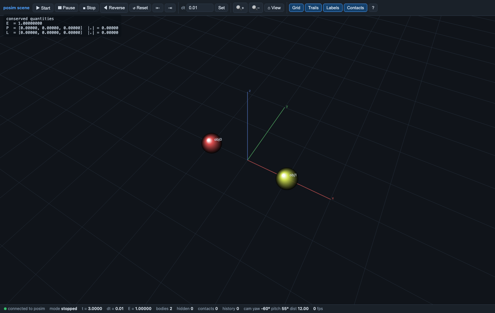
collision_02_unequal_massesThis notebook is one half of a pair. The other half is the example file scripts/collisions/02_unequal_masses.posim in this repository, which contains the same simulation written directly in the simulator's own command language. This notebook runs that same simulation from Python, and explains every line of it.
SolveIt_Notebooks_for_rust/04_collisions/collision_02_unequal_masses/collision_02_unequal_masses.ipynb (header cell prepended: run commands, GUI commands, movies, data access, full player script)rustSolveIt_macos-silicon_SUNDIALS_7_8_0/notebooks/collision_02_unequal_masses.ipynbrustSolveIt_macos-silicon_SUNDIALS_7_8_0/scripts/collisions/02_unequal_masses.posimpython3 SolveIt_Notebooks_for_rust/04_collisions/collision_02_unequal_masses/player_collision_02_unequal_masses.py run|gui|jump|capture out.png|data outdir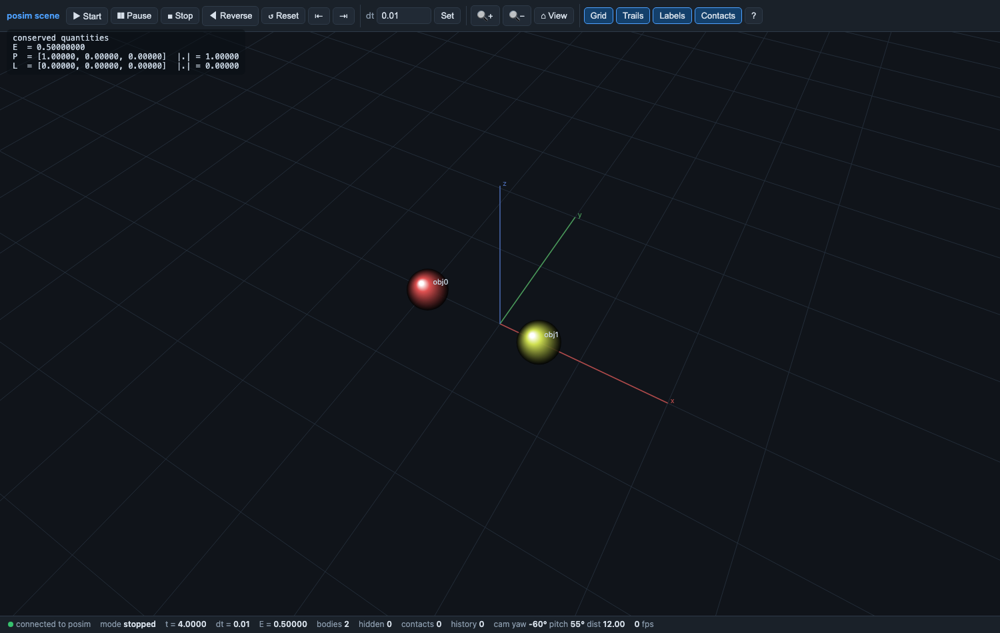
collision_03_restitution_ladderThis notebook is one half of a pair. The other half is the example file scripts/collisions/03_restitution_ladder.posim in this repository, which contains the same simulation written directly in the simulator's own command language. This notebook runs that same simulation from Python, and explains every line of it.
SolveIt_Notebooks_for_rust/04_collisions/collision_03_restitution_ladder/collision_03_restitution_ladder.ipynb (header cell prepended: run commands, GUI commands, movies, data access, full player script)rustSolveIt_macos-silicon_SUNDIALS_7_8_0/notebooks/collision_03_restitution_ladder.ipynbrustSolveIt_macos-silicon_SUNDIALS_7_8_0/scripts/collisions/03_restitution_ladder.posimpython3 SolveIt_Notebooks_for_rust/04_collisions/collision_03_restitution_ladder/player_collision_03_restitution_ladder.py run|gui|jump|capture out.png|data outdir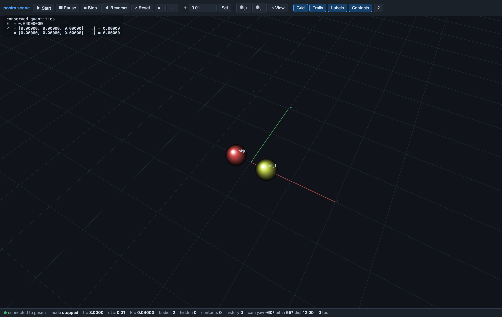
collision_04_newtons_cradleThis notebook is one half of a pair. The other half is the example file scripts/collisions/04_newtons_cradle.posim in this repository, which contains the same simulation written directly in the simulator's own command language. This notebook runs that same simulation from Python, and explains every line of it.
SolveIt_Notebooks_for_rust/04_collisions/collision_04_newtons_cradle/collision_04_newtons_cradle.ipynb (header cell prepended: run commands, GUI commands, movies, data access, full player script)rustSolveIt_macos-silicon_SUNDIALS_7_8_0/notebooks/collision_04_newtons_cradle.ipynbrustSolveIt_macos-silicon_SUNDIALS_7_8_0/scripts/collisions/04_newtons_cradle.posimpython3 SolveIt_Notebooks_for_rust/04_collisions/collision_04_newtons_cradle/player_collision_04_newtons_cradle.py run|gui|jump|capture out.png|data outdir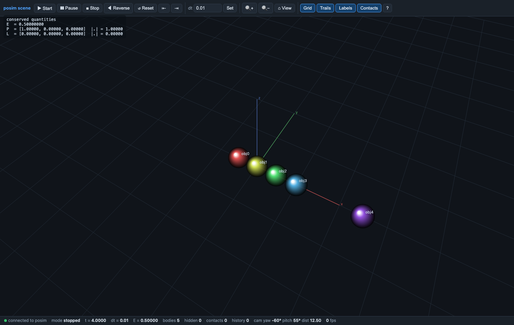
collision_05_billiard_breakThis notebook is one half of a pair. The other half is the example file scripts/collisions/05_billiard_break.posim in this repository, which contains the same simulation written directly in the simulator's own command language. This notebook runs that same simulation from Python, and explains every line of it.
SolveIt_Notebooks_for_rust/04_collisions/collision_05_billiard_break/collision_05_billiard_break.ipynb (header cell prepended: run commands, GUI commands, movies, data access, full player script)rustSolveIt_macos-silicon_SUNDIALS_7_8_0/notebooks/collision_05_billiard_break.ipynbrustSolveIt_macos-silicon_SUNDIALS_7_8_0/scripts/collisions/05_billiard_break.posimpython3 SolveIt_Notebooks_for_rust/04_collisions/collision_05_billiard_break/player_collision_05_billiard_break.py run|gui|jump|capture out.png|data outdir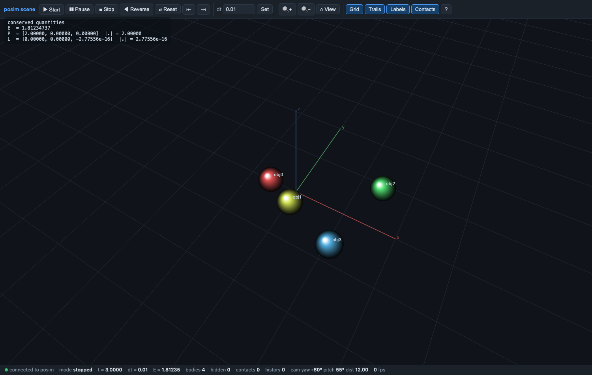
collision_06_spin_upThis notebook is one half of a pair. The other half is the example file scripts/collisions/06_spin_up.posim in this repository, which contains the same simulation written directly in the simulator's own command language. This notebook runs that same simulation from Python, and explains every line of it.
SolveIt_Notebooks_for_rust/04_collisions/collision_06_spin_up/collision_06_spin_up.ipynb (header cell prepended: run commands, GUI commands, movies, data access, full player script)rustSolveIt_macos-silicon_SUNDIALS_7_8_0/notebooks/collision_06_spin_up.ipynbrustSolveIt_macos-silicon_SUNDIALS_7_8_0/scripts/collisions/06_spin_up.posimpython3 SolveIt_Notebooks_for_rust/04_collisions/collision_06_spin_up/player_collision_06_spin_up.py run|gui|jump|capture out.png|data outdir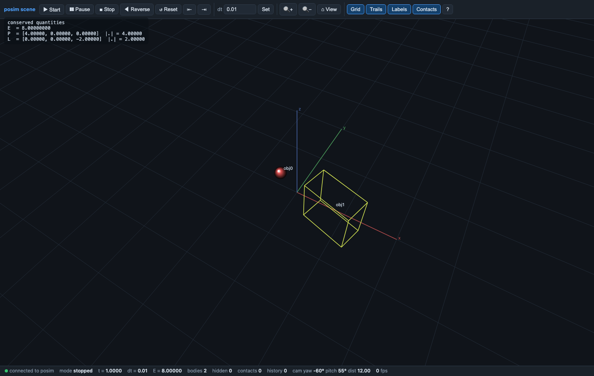
collision_07_thin_wall_toiThis notebook is one half of a pair. The other half is the example file scripts/collisions/07_thin_wall_toi.posim in this repository, which contains the same simulation written directly in the simulator's own command language. This notebook runs that same simulation from Python, and explains every line of it.
SolveIt_Notebooks_for_rust/04_collisions/collision_07_thin_wall_toi/collision_07_thin_wall_toi.ipynb (header cell prepended: run commands, GUI commands, movies, data access, full player script)rustSolveIt_macos-silicon_SUNDIALS_7_8_0/notebooks/collision_07_thin_wall_toi.ipynbrustSolveIt_macos-silicon_SUNDIALS_7_8_0/scripts/collisions/07_thin_wall_toi.posimpython3 SolveIt_Notebooks_for_rust/04_collisions/collision_07_thin_wall_toi/player_collision_07_thin_wall_toi.py run|gui|jump|capture out.png|data outdir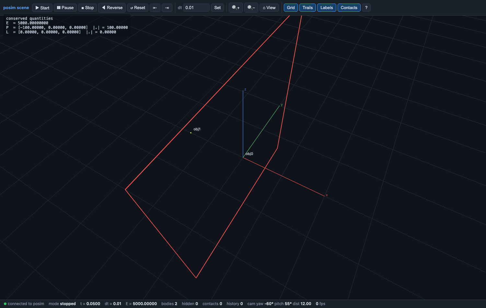
collision_08_colliding_binaryThis notebook is one half of a pair. The other half is the example file scripts/collisions/08_colliding_binary.posim in this repository, which contains the same simulation written directly in the simulator's own command language. This notebook runs that same simulation from Python, and explains every line of it.
SolveIt_Notebooks_for_rust/04_collisions/collision_08_colliding_binary/collision_08_colliding_binary.ipynb (header cell prepended: run commands, GUI commands, movies, data access, full player script)rustSolveIt_macos-silicon_SUNDIALS_7_8_0/notebooks/collision_08_colliding_binary.ipynbrustSolveIt_macos-silicon_SUNDIALS_7_8_0/scripts/collisions/08_colliding_binary.posimpython3 SolveIt_Notebooks_for_rust/04_collisions/collision_08_colliding_binary/player_collision_08_colliding_binary.py run|gui|jump|capture out.png|data outdircollision_09_spinning_targetThis notebook is one half of a pair. The other half is the example file scripts/collisions/09_spinning_target.posim in this repository, which contains the same simulation written directly in the simulator's own command language. This notebook runs that same simulation from Python, and explains every line of it.
SolveIt_Notebooks_for_rust/04_collisions/collision_09_spinning_target/collision_09_spinning_target.ipynb (header cell prepended: run commands, GUI commands, movies, data access, full player script)rustSolveIt_macos-silicon_SUNDIALS_7_8_0/notebooks/collision_09_spinning_target.ipynbrustSolveIt_macos-silicon_SUNDIALS_7_8_0/scripts/collisions/09_spinning_target.posimpython3 SolveIt_Notebooks_for_rust/04_collisions/collision_09_spinning_target/player_collision_09_spinning_target.py run|gui|jump|capture out.png|data outdir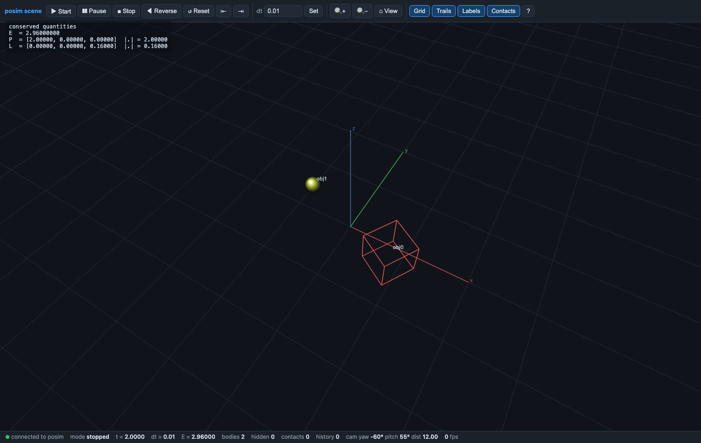
collision_10_billiard_boxThis notebook is one half of a pair. The other half is the example file scripts/collisions/10_billiard_box.posim in this repository, which contains the same simulation written directly in the simulator's own command language. This notebook runs that same simulation from Python, and explains every line of it.
SolveIt_Notebooks_for_rust/04_collisions/collision_10_billiard_box/collision_10_billiard_box.ipynb (header cell prepended: run commands, GUI commands, movies, data access, full player script)rustSolveIt_macos-silicon_SUNDIALS_7_8_0/notebooks/collision_10_billiard_box.ipynbrustSolveIt_macos-silicon_SUNDIALS_7_8_0/scripts/collisions/10_billiard_box.posimpython3 SolveIt_Notebooks_for_rust/04_collisions/collision_10_billiard_box/player_collision_10_billiard_box.py run|gui|jump|capture out.png|data outdir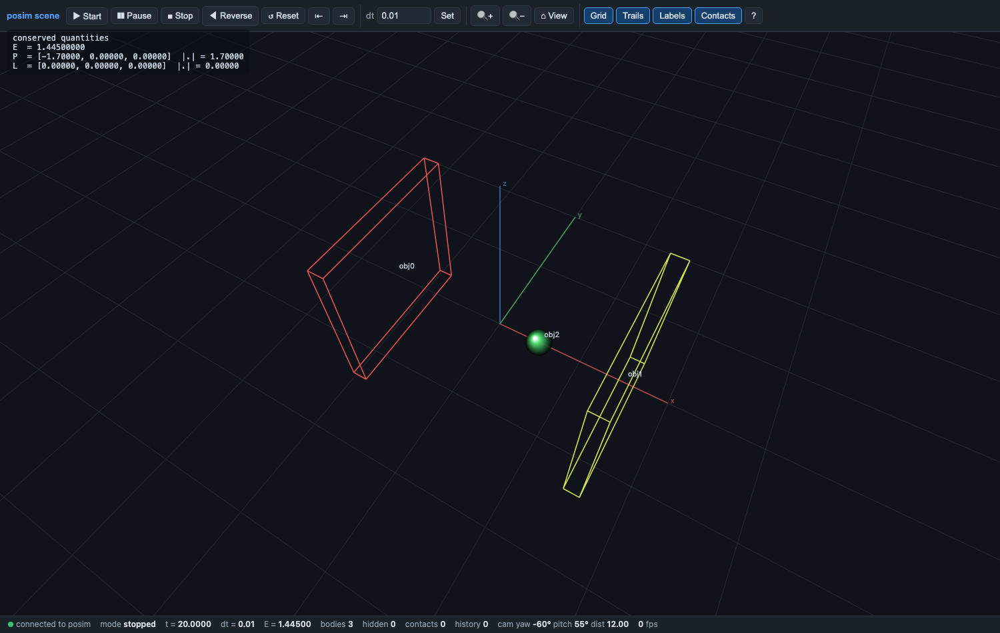
collision_11_box_of_shapesThis notebook is one half of a pair. The other half is the example file scripts/collisions/11_box_of_shapes.posim in this repository, which contains the same simulation written directly in the simulator's own command language. This notebook runs that same simulation from Python, and explains every line of it.
SolveIt_Notebooks_for_rust/04_collisions/collision_11_box_of_shapes/collision_11_box_of_shapes.ipynb (header cell prepended: run commands, GUI commands, movies, data access, full player script)rustSolveIt_macos-silicon_SUNDIALS_7_8_0/notebooks/collision_11_box_of_shapes.ipynbrustSolveIt_macos-silicon_SUNDIALS_7_8_0/scripts/collisions/11_box_of_shapes.posimpython3 SolveIt_Notebooks_for_rust/04_collisions/collision_11_box_of_shapes/player_collision_11_box_of_shapes.py run|gui|jump|capture out.png|data outdir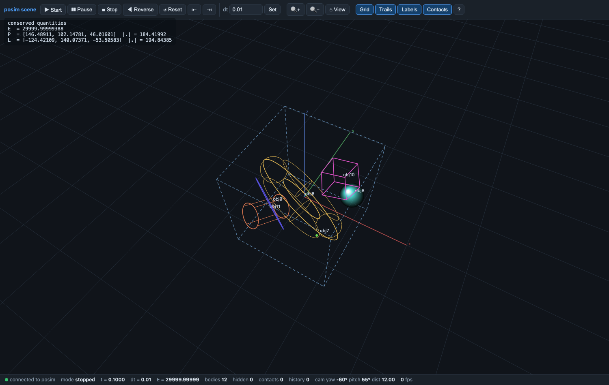
collision_12_two_dumbbellsThis notebook is one half of a pair. The other half is the example file scripts/collisions/12_two_dumbbells.posim in this repository, which contains the same simulation written directly in the simulator's own command language. This notebook runs that same simulation from Python, and explains every line of it.
SolveIt_Notebooks_for_rust/04_collisions/collision_12_two_dumbbells/collision_12_two_dumbbells.ipynb (header cell prepended: run commands, GUI commands, movies, data access, full player script)rustSolveIt_macos-silicon_SUNDIALS_7_8_0/notebooks/collision_12_two_dumbbells.ipynbrustSolveIt_macos-silicon_SUNDIALS_7_8_0/scripts/collisions/12_two_dumbbells.posimpython3 SolveIt_Notebooks_for_rust/04_collisions/collision_12_two_dumbbells/player_collision_12_two_dumbbells.py run|gui|jump|capture out.png|data outdir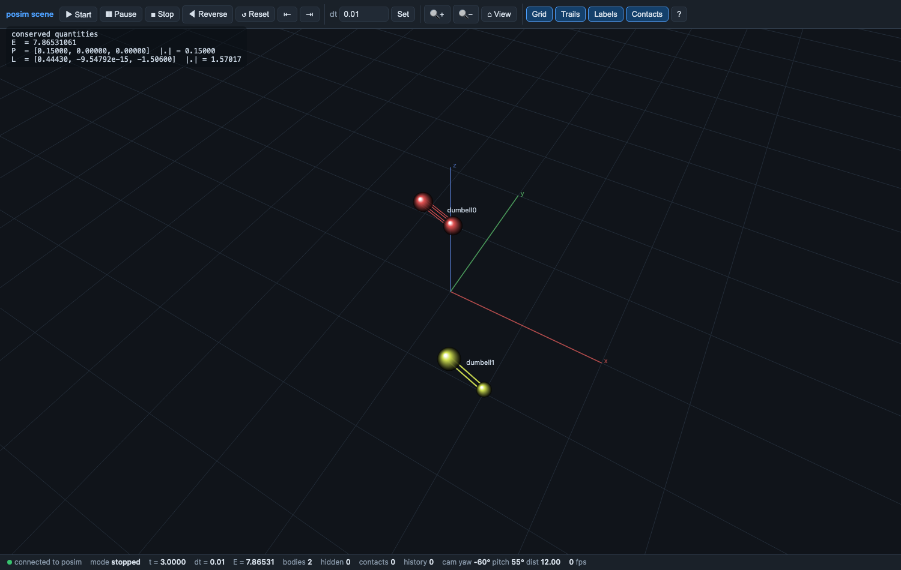
The thirteen recorded mechanism scenes: each notebook pairs with a recorded browser movie page in videos/ AND a live GUI server in gui/ that integrates the same scene in real time behind canvas controls with live physics readouts.
video_ball_joint_chainThis notebook is one half of a pair. The other half is the example file videos/scenes/ball_joint_chain.posim in this repository, which contains the same simulation written directly in the simulator's own command language. This notebook runs that same simulation from Python, and explains every line of it.
SolveIt_Notebooks_for_rust/05_mechanism_videos/video_ball_joint_chain/video_ball_joint_chain.ipynb (header cell prepended: run commands, GUI commands, movies, data access, full player script)rustSolveIt_macos-silicon_SUNDIALS_7_8_0/notebooks/video_ball_joint_chain.ipynbrustSolveIt_macos-silicon_SUNDIALS_7_8_0/videos/scenes/ball_joint_chain.posimrustSolveIt_macos-silicon_SUNDIALS_7_8_0/videos/ball_joint_chain.htmlpython3 rustSolveIt_macos-silicon_SUNDIALS_7_8_0/gui/ball_joint_chain/server.pypython3 SolveIt_Notebooks_for_rust/05_mechanism_videos/video_ball_joint_chain/player_video_ball_joint_chain.py run|gui|jump|capture out.png|data outdir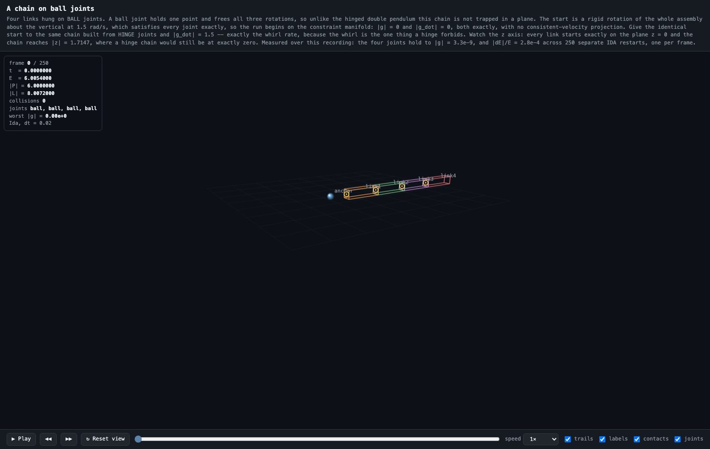
video_box_of_shapesThis notebook is one half of a pair. The other half is the example file videos/scenes/box_of_shapes.posim in this repository, which contains the same simulation written directly in the simulator's own command language. This notebook runs that same simulation from Python, and explains every line of it.
SolveIt_Notebooks_for_rust/05_mechanism_videos/video_box_of_shapes/video_box_of_shapes.ipynb (header cell prepended: run commands, GUI commands, movies, data access, full player script)rustSolveIt_macos-silicon_SUNDIALS_7_8_0/notebooks/video_box_of_shapes.ipynbrustSolveIt_macos-silicon_SUNDIALS_7_8_0/videos/scenes/box_of_shapes.posimrustSolveIt_macos-silicon_SUNDIALS_7_8_0/videos/box_of_shapes.htmlpython3 rustSolveIt_macos-silicon_SUNDIALS_7_8_0/gui/box_of_shapes/server.pypython3 SolveIt_Notebooks_for_rust/05_mechanism_videos/video_box_of_shapes/player_video_box_of_shapes.py run|gui|jump|capture out.png|data outdir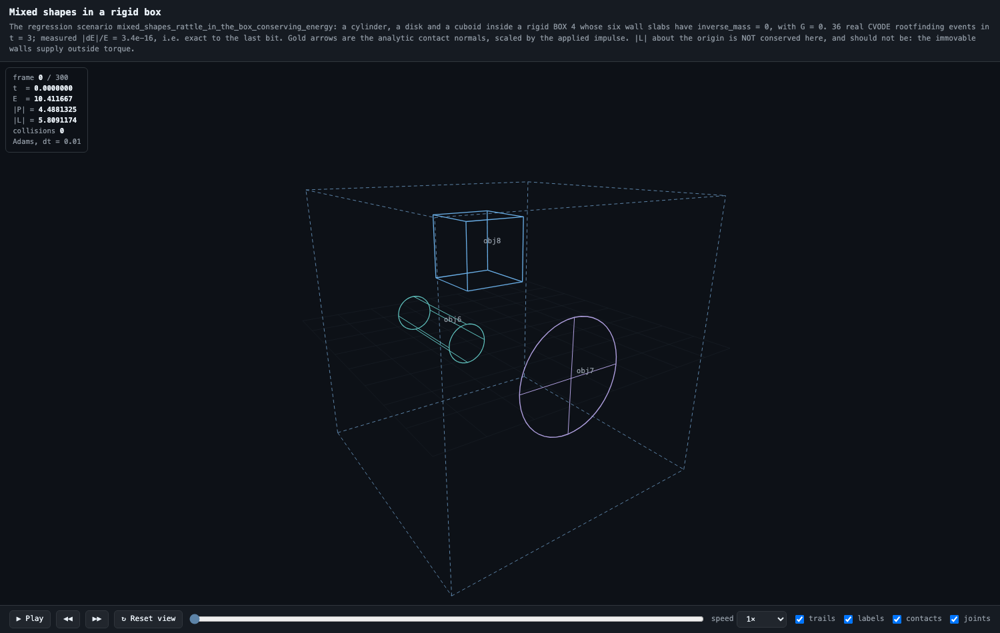
video_cardan_compassThis notebook is one half of a pair. The other half is the example file videos/scenes/cardan_compass.posim in this repository, which contains the same simulation written directly in the simulator's own command language. This notebook runs that same simulation from Python, and explains every line of it.
SolveIt_Notebooks_for_rust/05_mechanism_videos/video_cardan_compass/video_cardan_compass.ipynb (header cell prepended: run commands, GUI commands, movies, data access, full player script)rustSolveIt_macos-silicon_SUNDIALS_7_8_0/notebooks/video_cardan_compass.ipynbrustSolveIt_macos-silicon_SUNDIALS_7_8_0/videos/scenes/cardan_compass.posimrustSolveIt_macos-silicon_SUNDIALS_7_8_0/videos/cardan_compass.htmlpython3 rustSolveIt_macos-silicon_SUNDIALS_7_8_0/gui/cardan_compass/server.pypython3 SolveIt_Notebooks_for_rust/05_mechanism_videos/video_cardan_compass/player_video_cardan_compass.py run|gui|jump|capture out.png|data outdir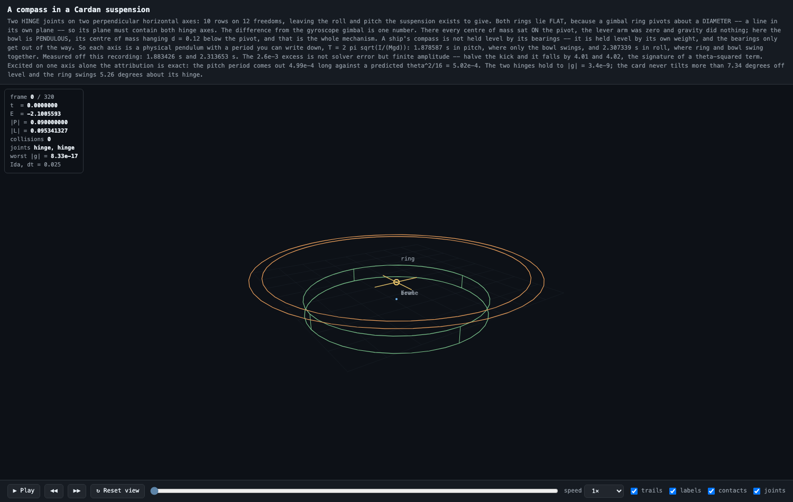
video_cardan_gearThis notebook is one half of a pair. The other half is the example file videos/scenes/cardan_gear.posim in this repository, which contains the same simulation written directly in the simulator's own command language. This notebook runs that same simulation from Python, and explains every line of it.
SolveIt_Notebooks_for_rust/05_mechanism_videos/video_cardan_gear/video_cardan_gear.ipynb (header cell prepended: run commands, GUI commands, movies, data access, full player script)rustSolveIt_macos-silicon_SUNDIALS_7_8_0/notebooks/video_cardan_gear.ipynbrustSolveIt_macos-silicon_SUNDIALS_7_8_0/videos/scenes/cardan_gear.posimrustSolveIt_macos-silicon_SUNDIALS_7_8_0/videos/cardan_gear.htmlpython3 rustSolveIt_macos-silicon_SUNDIALS_7_8_0/gui/cardan_gear/server.pypython3 SolveIt_Notebooks_for_rust/05_mechanism_videos/video_cardan_gear/player_video_cardan_gear.py run|gui|jump|capture out.png|data outdir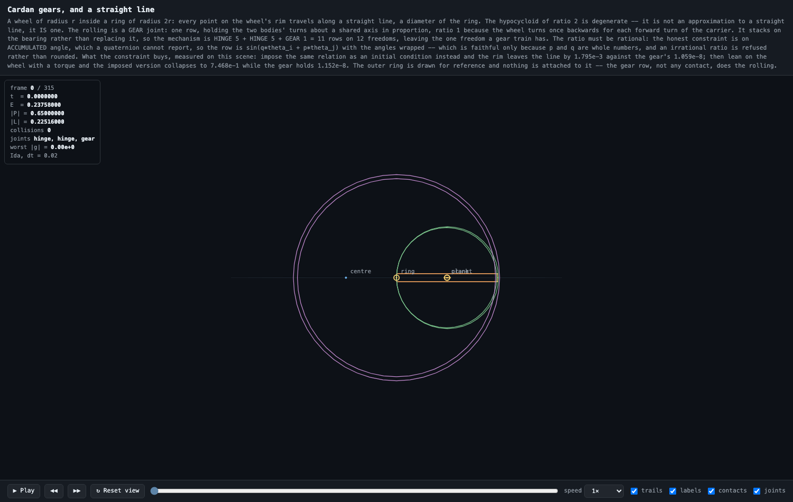
video_double_pendulum_hingesThis notebook is one half of a pair. The other half is the example file videos/scenes/double_pendulum_hinges.posim in this repository, which contains the same simulation written directly in the simulator's own command language. This notebook runs that same simulation from Python, and explains every line of it.
SolveIt_Notebooks_for_rust/05_mechanism_videos/video_double_pendulum_hinges/video_double_pendulum_hinges.ipynb (header cell prepended: run commands, GUI commands, movies, data access, full player script)rustSolveIt_macos-silicon_SUNDIALS_7_8_0/notebooks/video_double_pendulum_hinges.ipynbrustSolveIt_macos-silicon_SUNDIALS_7_8_0/videos/scenes/double_pendulum_hinges.posimrustSolveIt_macos-silicon_SUNDIALS_7_8_0/videos/double_pendulum_hinges.htmlpython3 rustSolveIt_macos-silicon_SUNDIALS_7_8_0/gui/double_pendulum_hinges/server.pypython3 SolveIt_Notebooks_for_rust/05_mechanism_videos/video_double_pendulum_hinges/player_video_double_pendulum_hinges.py run|gui|jump|capture out.png|data outdir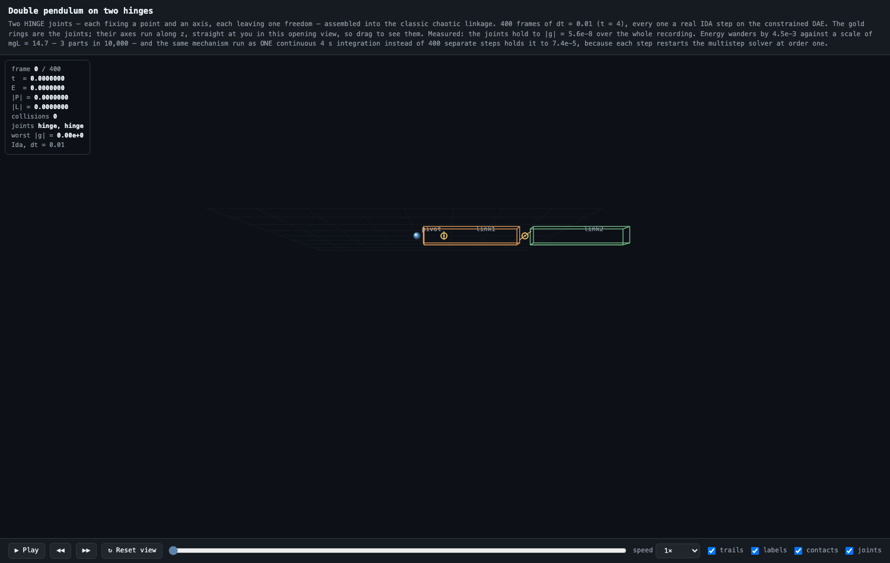
video_gyroscope_gimbalThis notebook is one half of a pair. The other half is the example file videos/scenes/gyroscope_gimbal.posim in this repository, which contains the same simulation written directly in the simulator's own command language. This notebook runs that same simulation from Python, and explains every line of it.
SolveIt_Notebooks_for_rust/05_mechanism_videos/video_gyroscope_gimbal/video_gyroscope_gimbal.ipynb (header cell prepended: run commands, GUI commands, movies, data access, full player script)rustSolveIt_macos-silicon_SUNDIALS_7_8_0/notebooks/video_gyroscope_gimbal.ipynbrustSolveIt_macos-silicon_SUNDIALS_7_8_0/videos/scenes/gyroscope_gimbal.posimrustSolveIt_macos-silicon_SUNDIALS_7_8_0/videos/gyroscope_gimbal.htmlpython3 rustSolveIt_macos-silicon_SUNDIALS_7_8_0/gui/gyroscope_gimbal/server.pypython3 SolveIt_Notebooks_for_rust/05_mechanism_videos/video_gyroscope_gimbal/player_video_gyroscope_gimbal.py run|gui|jump|capture out.png|data outdir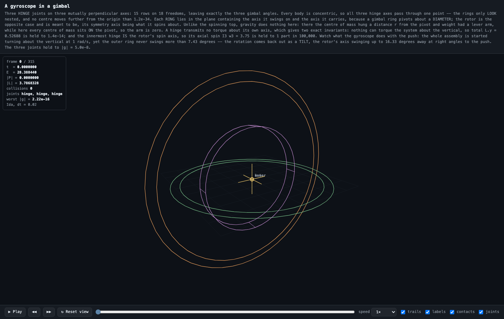
video_kepler_ellipseThis notebook is one half of a pair. The other half is the example file videos/scenes/kepler_ellipse.posim in this repository, which contains the same simulation written directly in the simulator's own command language. This notebook runs that same simulation from Python, and explains every line of it.
SolveIt_Notebooks_for_rust/05_mechanism_videos/video_kepler_ellipse/video_kepler_ellipse.ipynb (header cell prepended: run commands, GUI commands, movies, data access, full player script)rustSolveIt_macos-silicon_SUNDIALS_7_8_0/notebooks/video_kepler_ellipse.ipynbrustSolveIt_macos-silicon_SUNDIALS_7_8_0/videos/scenes/kepler_ellipse.posimrustSolveIt_macos-silicon_SUNDIALS_7_8_0/videos/kepler_ellipse.htmlpython3 rustSolveIt_macos-silicon_SUNDIALS_7_8_0/gui/kepler_ellipse/server.pypython3 SolveIt_Notebooks_for_rust/05_mechanism_videos/video_kepler_ellipse/player_video_kepler_ellipse.py run|gui|jump|capture out.png|data outdir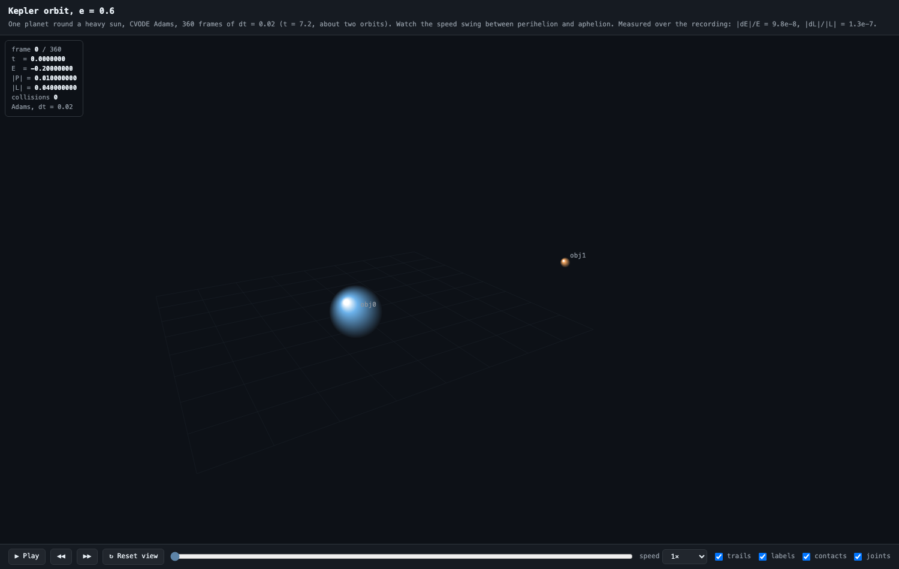
video_piston_crankshaftThis notebook is one half of a pair. The other half is the example file videos/scenes/piston_crankshaft.posim in this repository, which contains the same simulation written directly in the simulator's own command language. This notebook runs that same simulation from Python, and explains every line of it.
SolveIt_Notebooks_for_rust/05_mechanism_videos/video_piston_crankshaft/video_piston_crankshaft.ipynb (header cell prepended: run commands, GUI commands, movies, data access, full player script)rustSolveIt_macos-silicon_SUNDIALS_7_8_0/notebooks/video_piston_crankshaft.ipynbrustSolveIt_macos-silicon_SUNDIALS_7_8_0/videos/scenes/piston_crankshaft.posimrustSolveIt_macos-silicon_SUNDIALS_7_8_0/videos/piston_crankshaft.htmlpython3 rustSolveIt_macos-silicon_SUNDIALS_7_8_0/gui/piston_crankshaft/server.pypython3 SolveIt_Notebooks_for_rust/05_mechanism_videos/video_piston_crankshaft/player_video_piston_crankshaft.py run|gui|jump|capture out.png|data outdir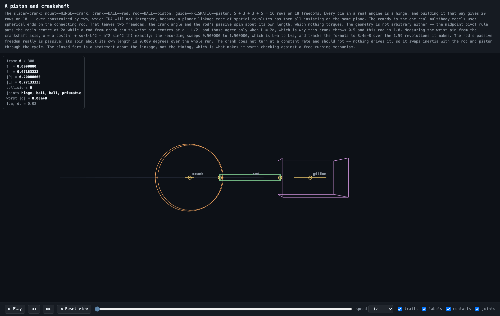
video_rack_and_pinionThis notebook is one half of a pair. The other half is the example file videos/scenes/rack_and_pinion.posim in this repository, which contains the same simulation written directly in the simulator's own command language. This notebook runs that same simulation from Python, and explains every line of it.
SolveIt_Notebooks_for_rust/05_mechanism_videos/video_rack_and_pinion/video_rack_and_pinion.ipynb (header cell prepended: run commands, GUI commands, movies, data access, full player script)rustSolveIt_macos-silicon_SUNDIALS_7_8_0/notebooks/video_rack_and_pinion.ipynbrustSolveIt_macos-silicon_SUNDIALS_7_8_0/videos/scenes/rack_and_pinion.posimrustSolveIt_macos-silicon_SUNDIALS_7_8_0/videos/rack_and_pinion.htmlpython3 rustSolveIt_macos-silicon_SUNDIALS_7_8_0/gui/rack_and_pinion/server.pypython3 SolveIt_Notebooks_for_rust/05_mechanism_videos/video_rack_and_pinion/player_video_rack_and_pinion.py run|gui|jump|capture out.png|data outdir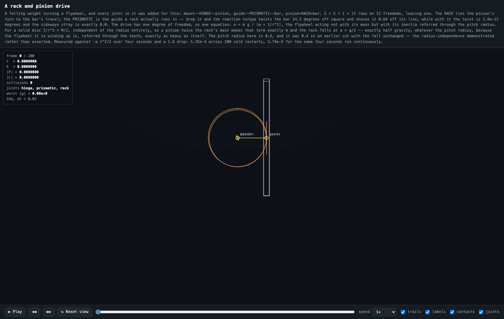
video_rod_pendulum_chainThis notebook is one half of a pair. The other half is the example file videos/scenes/rod_pendulum_chain.posim in this repository, which contains the same simulation written directly in the simulator's own command language. This notebook runs that same simulation from Python, and explains every line of it.
SolveIt_Notebooks_for_rust/05_mechanism_videos/video_rod_pendulum_chain/video_rod_pendulum_chain.ipynb (header cell prepended: run commands, GUI commands, movies, data access, full player script)rustSolveIt_macos-silicon_SUNDIALS_7_8_0/notebooks/video_rod_pendulum_chain.ipynbrustSolveIt_macos-silicon_SUNDIALS_7_8_0/videos/scenes/rod_pendulum_chain.posimrustSolveIt_macos-silicon_SUNDIALS_7_8_0/videos/rod_pendulum_chain.htmlpython3 rustSolveIt_macos-silicon_SUNDIALS_7_8_0/gui/rod_pendulum_chain/server.pypython3 SolveIt_Notebooks_for_rust/05_mechanism_videos/video_rod_pendulum_chain/player_video_rod_pendulum_chain.py run|gui|jump|capture out.png|data outdir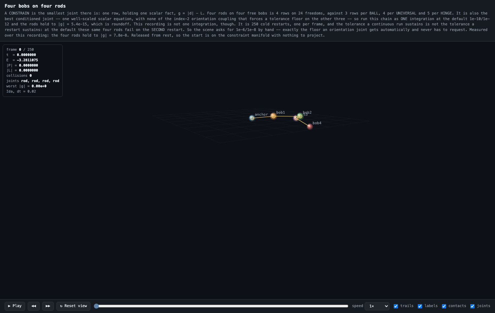
video_spinning_topThis notebook is one half of a pair. The other half is the example file videos/scenes/spinning_top.posim in this repository, which contains the same simulation written directly in the simulator's own command language. This notebook runs that same simulation from Python, and explains every line of it.
SolveIt_Notebooks_for_rust/05_mechanism_videos/video_spinning_top/video_spinning_top.ipynb (header cell prepended: run commands, GUI commands, movies, data access, full player script)rustSolveIt_macos-silicon_SUNDIALS_7_8_0/notebooks/video_spinning_top.ipynbrustSolveIt_macos-silicon_SUNDIALS_7_8_0/videos/scenes/spinning_top.posimrustSolveIt_macos-silicon_SUNDIALS_7_8_0/videos/spinning_top.htmlpython3 rustSolveIt_macos-silicon_SUNDIALS_7_8_0/gui/spinning_top/server.pypython3 SolveIt_Notebooks_for_rust/05_mechanism_videos/video_spinning_top/player_video_spinning_top.py run|gui|jump|capture out.png|data outdir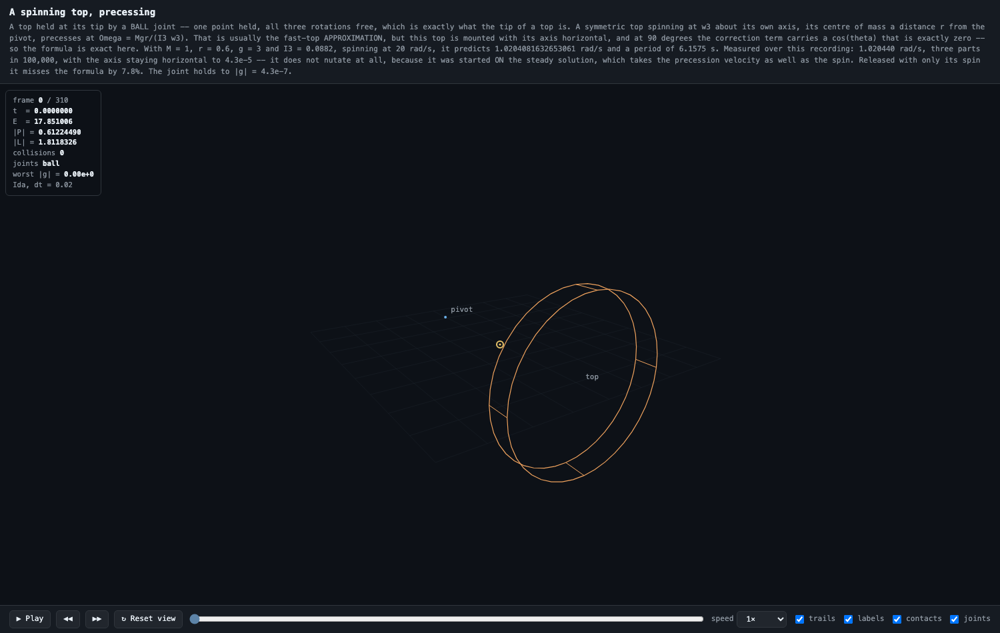
video_tumbling_racketThis notebook is one half of a pair. The other half is the example file videos/scenes/tumbling_racket.posim in this repository, which contains the same simulation written directly in the simulator's own command language. This notebook runs that same simulation from Python, and explains every line of it.
SolveIt_Notebooks_for_rust/05_mechanism_videos/video_tumbling_racket/video_tumbling_racket.ipynb (header cell prepended: run commands, GUI commands, movies, data access, full player script)rustSolveIt_macos-silicon_SUNDIALS_7_8_0/notebooks/video_tumbling_racket.ipynbrustSolveIt_macos-silicon_SUNDIALS_7_8_0/videos/scenes/tumbling_racket.posimrustSolveIt_macos-silicon_SUNDIALS_7_8_0/videos/tumbling_racket.htmlpython3 rustSolveIt_macos-silicon_SUNDIALS_7_8_0/gui/tumbling_racket/server.pypython3 SolveIt_Notebooks_for_rust/05_mechanism_videos/video_tumbling_racket/player_video_tumbling_racket.py run|gui|jump|capture out.png|data outdir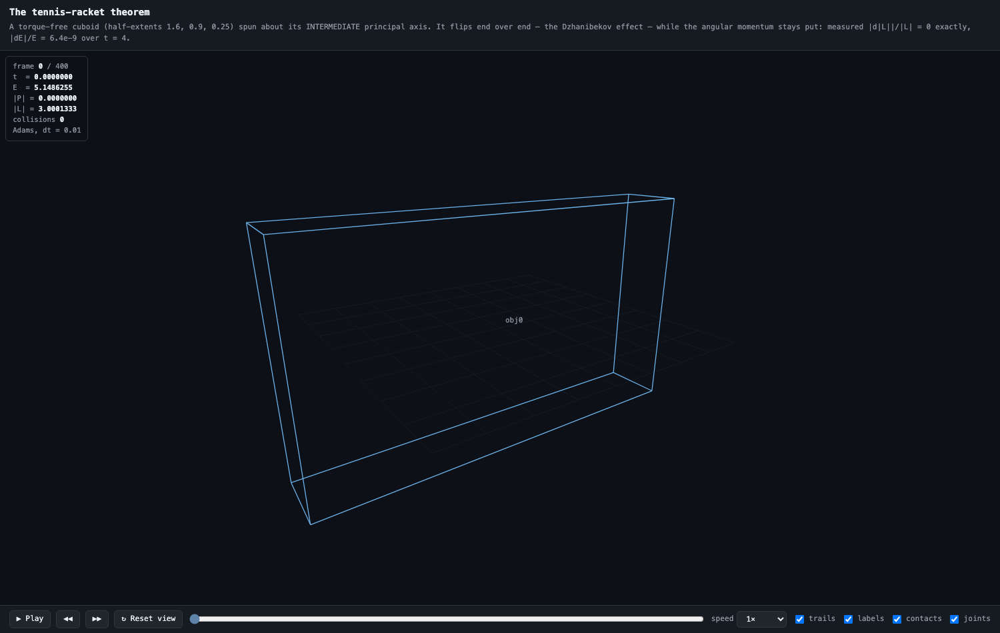
video_universal_jointThis notebook is one half of a pair. The other half is the example file videos/scenes/universal_joint.posim in this repository, which contains the same simulation written directly in the simulator's own command language. This notebook runs that same simulation from Python, and explains every line of it.
SolveIt_Notebooks_for_rust/05_mechanism_videos/video_universal_joint/video_universal_joint.ipynb (header cell prepended: run commands, GUI commands, movies, data access, full player script)rustSolveIt_macos-silicon_SUNDIALS_7_8_0/notebooks/video_universal_joint.ipynbrustSolveIt_macos-silicon_SUNDIALS_7_8_0/videos/scenes/universal_joint.posimrustSolveIt_macos-silicon_SUNDIALS_7_8_0/videos/universal_joint.htmlpython3 rustSolveIt_macos-silicon_SUNDIALS_7_8_0/gui/universal_joint/server.pypython3 SolveIt_Notebooks_for_rust/05_mechanism_videos/video_universal_joint/player_video_universal_joint.py run|gui|jump|capture out.png|data outdir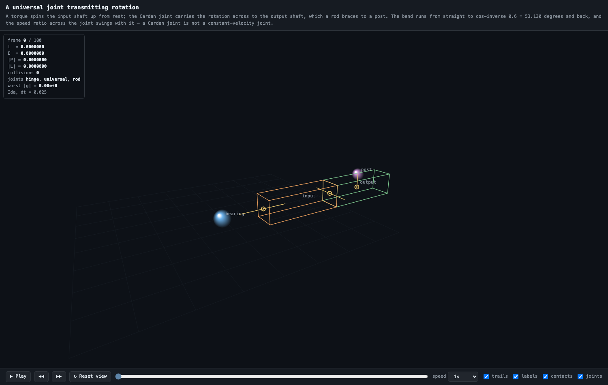
The compiled, self-checking Rust examples: each notebook builds and runs one physical_object example and asserts its SUCCESS verdict — the verdict is textual, so these entries carry no GUI image, honestly.
rust_bouncing_ball_restitutionThis notebook is one half of a pair. The other half is the example file physical_object/examples/bouncing_ball_restitution.rs in this repository, which contains the same simulation written directly in the simulator's own command language. This notebook runs that same simulation from Python, and explains every line of it.
SolveIt_Notebooks_for_rust/06_rust_compiled_examples/rust_bouncing_ball_restitution/rust_bouncing_ball_restitution.ipynb (header cell prepended: run commands, GUI commands, movies, data access, full player script)rustSolveIt_macos-silicon_SUNDIALS_7_8_0/notebooks/rust_bouncing_ball_restitution.ipynbrustSolveIt_macos-silicon_SUNDIALS_7_8_0/physical_object/examples/bouncing_ball_restitution.rspython3 SolveIt_Notebooks_for_rust/06_rust_compiled_examples/rust_bouncing_ball_restitution/player_rust_bouncing_ball_restitution.py run|gui|jump|capture out.png|data outdir(no browser GUI in this family — the verdict is textual, embedded in the executed notebook)
rust_charged_in_b_fieldThis notebook is one half of a pair. The other half is the example file physical_object/examples/charged_in_b_field.rs in this repository, which contains the same simulation written directly in the simulator's own command language. This notebook runs that same simulation from Python, and explains every line of it.
SolveIt_Notebooks_for_rust/06_rust_compiled_examples/rust_charged_in_b_field/rust_charged_in_b_field.ipynb (header cell prepended: run commands, GUI commands, movies, data access, full player script)rustSolveIt_macos-silicon_SUNDIALS_7_8_0/notebooks/rust_charged_in_b_field.ipynbrustSolveIt_macos-silicon_SUNDIALS_7_8_0/physical_object/examples/charged_in_b_field.rspython3 SolveIt_Notebooks_for_rust/06_rust_compiled_examples/rust_charged_in_b_field/player_rust_charged_in_b_field.py run|gui|jump|capture out.png|data outdir(no browser GUI in this family — the verdict is textual, embedded in the executed notebook)
rust_kepler_orbitThis notebook is one half of a pair. The other half is the example file physical_object/examples/kepler_orbit.rs in this repository, which contains the same simulation written directly in the simulator's own command language. This notebook runs that same simulation from Python, and explains every line of it.
SolveIt_Notebooks_for_rust/06_rust_compiled_examples/rust_kepler_orbit/rust_kepler_orbit.ipynb (header cell prepended: run commands, GUI commands, movies, data access, full player script)rustSolveIt_macos-silicon_SUNDIALS_7_8_0/notebooks/rust_kepler_orbit.ipynbrustSolveIt_macos-silicon_SUNDIALS_7_8_0/physical_object/examples/kepler_orbit.rspython3 SolveIt_Notebooks_for_rust/06_rust_compiled_examples/rust_kepler_orbit/player_rust_kepler_orbit.py run|gui|jump|capture out.png|data outdir(no browser GUI in this family — the verdict is textual, embedded in the executed notebook)
rust_newtons_cradleThis notebook is one half of a pair. The other half is the example file physical_object/examples/newtons_cradle.rs in this repository, which contains the same simulation written directly in the simulator's own command language. This notebook runs that same simulation from Python, and explains every line of it.
SolveIt_Notebooks_for_rust/06_rust_compiled_examples/rust_newtons_cradle/rust_newtons_cradle.ipynb (header cell prepended: run commands, GUI commands, movies, data access, full player script)rustSolveIt_macos-silicon_SUNDIALS_7_8_0/notebooks/rust_newtons_cradle.ipynbrustSolveIt_macos-silicon_SUNDIALS_7_8_0/physical_object/examples/newtons_cradle.rspython3 SolveIt_Notebooks_for_rust/06_rust_compiled_examples/rust_newtons_cradle/player_rust_newtons_cradle.py run|gui|jump|capture out.png|data outdir(no browser GUI in this family — the verdict is textual, embedded in the executed notebook)
rust_outer_solar_systemThis notebook is one half of a pair. The other half is the example file physical_object/examples/outer_solar_system.rs in this repository, which contains the same simulation written directly in the simulator's own command language. This notebook runs that same simulation from Python, and explains every line of it.
SolveIt_Notebooks_for_rust/06_rust_compiled_examples/rust_outer_solar_system/rust_outer_solar_system.ipynb (header cell prepended: run commands, GUI commands, movies, data access, full player script)rustSolveIt_macos-silicon_SUNDIALS_7_8_0/notebooks/rust_outer_solar_system.ipynbrustSolveIt_macos-silicon_SUNDIALS_7_8_0/physical_object/examples/outer_solar_system.rspython3 SolveIt_Notebooks_for_rust/06_rust_compiled_examples/rust_outer_solar_system/player_rust_outer_solar_system.py run|gui|jump|capture out.png|data outdir(no browser GUI in this family — the verdict is textual, embedded in the executed notebook)
rust_tumbling_bodyThis notebook is one half of a pair. The other half is the example file physical_object/examples/tumbling_body.rs in this repository, which contains the same simulation written directly in the simulator's own command language. This notebook runs that same simulation from Python, and explains every line of it.
SolveIt_Notebooks_for_rust/06_rust_compiled_examples/rust_tumbling_body/rust_tumbling_body.ipynb (header cell prepended: run commands, GUI commands, movies, data access, full player script)rustSolveIt_macos-silicon_SUNDIALS_7_8_0/notebooks/rust_tumbling_body.ipynbrustSolveIt_macos-silicon_SUNDIALS_7_8_0/physical_object/examples/tumbling_body.rspython3 SolveIt_Notebooks_for_rust/06_rust_compiled_examples/rust_tumbling_body/player_rust_tumbling_body.py run|gui|jump|capture out.png|data outdir(no browser GUI in this family — the verdict is textual, embedded in the executed notebook)
The N-body verification notebooks of the rebound/reboundx pure-Rust port: integrator equivalence, simulation archives, tides and spin, shearing sheets. Verdicts are textual (no browser GUI in this family).
addfmt_testAdds the built-in solar system plus particles specified by orbital elements, by Pal coordinates, and by orbital period. Verified bit-identical against C.
SolveIt_Notebooks_for_rust/07_nbody_rebound_rust/addfmt_test/addfmt_test.ipynb (header cell prepended: run commands, GUI commands, movies, data access, full player script)rustSolveIt_macos-silicon_SUNDIALS_7_8_0/rebound_rust/notebooks/addfmt_test.ipynbpython3 SolveIt_Notebooks_for_rust/07_nbody_rebound_rust/addfmt_test/player_addfmt_test.py run|gui|jump|capture out.png|data outdir(no browser GUI in this family — the verdict is textual, embedded in the executed notebook)
archive_testWrites a 3-snapshot Simulationarchive. The same file loads in the C build and continues bit-identically, and vice versa — the formats are fully interchangeable.
SolveIt_Notebooks_for_rust/07_nbody_rebound_rust/archive_test/archive_test.ipynb (header cell prepended: run commands, GUI commands, movies, data access, full player script)rustSolveIt_macos-silicon_SUNDIALS_7_8_0/rebound_rust/notebooks/archive_test.ipynbpython3 SolveIt_Notebooks_for_rust/07_nbody_rebound_rust/archive_test/player_archive_test.py run|gui|jump|capture out.png|data outdir(no browser GUI in this family — the verdict is textual, embedded in the executed notebook)
bs_pow_diffThe BS integrator picks its own step size using pow(). This evaluates exactly those pow() calls (200,000 samples) so the disagreement can be measured precisely: 56 differ, every one by exactly 1 ULP — the smallest difference two numbers can have.
*[Encyclopedia note: the intro above describes the Windows/MSVC measurement; the executed run embedded in THIS copy reports zero pow divergences ('ULP distribution: none') on macOS/Apple Silicon.]*
SolveIt_Notebooks_for_rust/07_nbody_rebound_rust/bs_pow_diff/bs_pow_diff.ipynb (header cell prepended: run commands, GUI commands, movies, data access, full player script)rustSolveIt_macos-silicon_SUNDIALS_7_8_0/rebound_rust/notebooks/bs_pow_diff.ipynbpython3 SolveIt_Notebooks_for_rust/07_nbody_rebound_rust/bs_pow_diff/player_bs_pow_diff.py run|gui|jump|capture out.png|data outdir(no browser GUI in this family — the verdict is textual, embedded in the executed notebook)
derivatives_testEvaluates all 65 reb_particle_derivative_* functions on two configurations and dumps raw bits; verified 130/130 lines bit-identical against the C build.
SolveIt_Notebooks_for_rust/07_nbody_rebound_rust/derivatives_test/derivatives_test.ipynb (header cell prepended: run commands, GUI commands, movies, data access, full player script)rustSolveIt_macos-silicon_SUNDIALS_7_8_0/rebound_rust/notebooks/derivatives_test.ipynbpython3 SolveIt_Notebooks_for_rust/07_nbody_rebound_rust/derivatives_test/player_derivatives_test.py run|gui|jump|capture out.png|data outdir(no browser GUI in this family — the verdict is textual, embedded in the executed notebook)
frequency_testRuns REBOUND's frequency analysis in all three modes on a synthetic three-frequency signal (true frequencies 0.30, 0.55, 0.11 radians per sample) and prints the recovered frequencies, amplitudes and phases.
SolveIt_Notebooks_for_rust/07_nbody_rebound_rust/frequency_test/frequency_test.ipynb (header cell prepended: run commands, GUI commands, movies, data access, full player script)rustSolveIt_macos-silicon_SUNDIALS_7_8_0/rebound_rust/notebooks/frequency_test.ipynbpython3 SolveIt_Notebooks_for_rust/07_nbody_rebound_rust/frequency_test/player_frequency_test.py run|gui|jump|capture out.png|data outdir(no browser GUI in this family — the verdict is textual, embedded in the executed notebook)
integrators_testRuns the fixed three-body problem under a chosen integrator configuration and dumps the final state as raw IEEE-754 bits. 63 configurations of this harness were verified bit-identical against the MSVC C build. Change the arguments below to try others (e.g. 'ias15', 'saba-h1064', 'mercurius', 'trace').
*[Encyclopedia note: the bit-identical-vs-MSVC claim is history from the port's Windows lineage; the verdict embedded in THIS copy is the macOS/Apple Silicon run's own.]*
SolveIt_Notebooks_for_rust/07_nbody_rebound_rust/integrators_test/integrators_test.ipynb (header cell prepended: run commands, GUI commands, movies, data access, full player script)rustSolveIt_macos-silicon_SUNDIALS_7_8_0/rebound_rust/notebooks/integrators_test.ipynbpython3 SolveIt_Notebooks_for_rust/07_nbody_rebound_rust/integrators_test/player_integrators_test.py run|gui|jump|capture out.png|data outdir(no browser GUI in this family — the verdict is textual, embedded in the executed notebook)
kepler_rectilinearCalls the Kepler solver with (near-)rectilinear hyperbolic motion — the regime that strains its iteration hardest. This probe found a genuine port defect: with a large timestep the Rust looped forever where the C returned, because while (a > b) and if (a <= b) break differ when a value is NaN. Now fixed; the two agree bit-for-bit.
SolveIt_Notebooks_for_rust/07_nbody_rebound_rust/kepler_rectilinear/kepler_rectilinear.ipynb (header cell prepended: run commands, GUI commands, movies, data access, full player script)rustSolveIt_macos-silicon_SUNDIALS_7_8_0/rebound_rust/notebooks/kepler_rectilinear.ipynbpython3 SolveIt_Notebooks_for_rust/07_nbody_rebound_rust/kepler_rectilinear/player_kepler_rectilinear.py run|gui|jump|capture out.png|data outdir(no browser GUI in this family — the verdict is textual, embedded in the executed notebook)
libm_diffSamples 200,000 inputs per maths function and dumps raw bits, so the C and Rust results can be compared exactly. This is the measurement that underpins the whole project: sin, cos, tan, atan2, sqrt, fmod, exp, log and cbrt are bit-identical to Microsoft's C library, and pow is the one exception.
*[Encyclopedia note: the intro above is the notebook's own Windows-lineage description; the executed run embedded in THIS copy reports 'functions that differ: NONE - all bit-identical' on macOS/Apple Silicon.]*
SolveIt_Notebooks_for_rust/07_nbody_rebound_rust/libm_diff/libm_diff.ipynb (header cell prepended: run commands, GUI commands, movies, data access, full player script)rustSolveIt_macos-silicon_SUNDIALS_7_8_0/rebound_rust/notebooks/libm_diff.ipynbpython3 SolveIt_Notebooks_for_rust/07_nbody_rebound_rust/libm_diff/player_libm_diff.py run|gui|jump|capture out.png|data outdir(no browser GUI in this family — the verdict is textual, embedded in the executed notebook)
movetocom_varProbes reb_simulation_move_to_com with MEGNO variational particles. An audit found the first-order shift summed the wrong particle array, which silently changed every MEGNO/Lyapunov result. Now fixed and verified bit-identical against C.
SolveIt_Notebooks_for_rust/07_nbody_rebound_rust/movetocom_var/movetocom_var.ipynb (header cell prepended: run commands, GUI commands, movies, data access, full player script)rustSolveIt_macos-silicon_SUNDIALS_7_8_0/rebound_rust/notebooks/movetocom_var.ipynbpython3 SolveIt_Notebooks_for_rust/07_nbody_rebound_rust/movetocom_var/player_movetocom_var.py run|gui|jump|capture out.png|data outdir(no browser GUI in this family — the verdict is textual, embedded in the executed notebook)
movetocom_var_testThe probe written during the audit to demonstrate the variational centre-of-mass defect, kept as a regression check. It prints both dm accumulators so you can see why the wrong array mattered.
SolveIt_Notebooks_for_rust/07_nbody_rebound_rust/movetocom_var_test/movetocom_var_test.ipynb (header cell prepended: run commands, GUI commands, movies, data access, full player script)rustSolveIt_macos-silicon_SUNDIALS_7_8_0/rebound_rust/notebooks/movetocom_var_test.ipynbpython3 SolveIt_Notebooks_for_rust/07_nbody_rebound_rust/movetocom_var_test/player_movetocom_var_test.py run|gui|jump|capture out.png|data outdir(no browser GUI in this family — the verdict is textual, embedded in the executed notebook)
rebx_binary_roundtripSerialises a REBOUNDx state (forces and parameters of several types), reads it back into a fresh simulation, and checks every value returns with identical bits.
SolveIt_Notebooks_for_rust/07_nbody_rebound_rust/rebx_binary_roundtrip/rebx_binary_roundtrip.ipynb (header cell prepended: run commands, GUI commands, movies, data access, full player script)rustSolveIt_macos-silicon_SUNDIALS_7_8_0/rebound_rust/notebooks/rebx_binary_roundtrip.ipynbpython3 SolveIt_Notebooks_for_rust/07_nbody_rebound_rust/rebx_binary_roundtrip/player_rebx_binary_roundtrip.py run|gui|jump|capture out.png|data outdir(no browser GUI in this family — the verdict is textual, embedded in the executed notebook)
server_testStarts the ported web server, fetches the /simulation binary over HTTP, then shuts it down with the 'Q' key endpoint. The served blob is a valid REBOUND binary that the C build loads to the identical state.
SolveIt_Notebooks_for_rust/07_nbody_rebound_rust/server_test/server_test.ipynb (header cell prepended: run commands, GUI commands, movies, data access, full player script)rustSolveIt_macos-silicon_SUNDIALS_7_8_0/rebound_rust/notebooks/server_test.ipynbpython3 SolveIt_Notebooks_for_rust/07_nbody_rebound_rust/server_test/player_server_test.py run|gui|jump|capture out.png|data outdir(no browser GUI in this family — the verdict is textual, embedded in the executed notebook)
shearing_sheetA straight port of REBOUND's flagship example: a small sheared box of colliding ice particles, using the SEI integrator, octree self-gravity, tree collision search and shear-periodic boundaries. Note: like the stock C example, shearing_sheet integrates to infinity — you stop it with Ctrl+C. A notebook cannot run that, so this notebook builds it (to prove it compiles) and then runs the terminating seeded harness shearing_sheet_test for 400 steps to produce the plot. The two set up identical physics; the harness just fixes the random seed and stops.
SolveIt_Notebooks_for_rust/07_nbody_rebound_rust/shearing_sheet/shearing_sheet.ipynb (header cell prepended: run commands, GUI commands, movies, data access, full player script)rustSolveIt_macos-silicon_SUNDIALS_7_8_0/rebound_rust/notebooks/shearing_sheet.ipynbpython3 SolveIt_Notebooks_for_rust/07_nbody_rebound_rust/shearing_sheet/player_shearing_sheet.py run|gui|jump|capture out.png|data outdir(no browser GUI in this family — the verdict is textual, embedded in the executed notebook)
shearing_sheet_testRuns the seeded 400-step shearing sheet and, if the C reference dump is present, verifies the two agree on every bit and prints both SHA-256 fingerprints. This is the project's headline acceptance test: 1,482 particles and ~102,500 collisions.
SolveIt_Notebooks_for_rust/07_nbody_rebound_rust/shearing_sheet_test/shearing_sheet_test.ipynb (header cell prepended: run commands, GUI commands, movies, data access, full player script)rustSolveIt_macos-silicon_SUNDIALS_7_8_0/rebound_rust/notebooks/shearing_sheet_test.ipynbpython3 SolveIt_Notebooks_for_rust/07_nbody_rebound_rust/shearing_sheet_test/player_shearing_sheet_test.py run|gui|jump|capture out.png|data outdir(no browser GUI in this family — the verdict is textual, embedded in the executed notebook)
tides_spin_kozaiA planet with a distant stellar companion that periodically drives its orbit to high eccentricity. Uses the ADAPTIVE IAS15 integrator plus two REBOUNDx forces at once. Matching the C bit-for-bit here means both programs chose the identical sequence of thousands of adaptive steps.
SolveIt_Notebooks_for_rust/07_nbody_rebound_rust/tides_spin_kozai/tides_spin_kozai.ipynb (header cell prepended: run commands, GUI commands, movies, data access, full player script)rustSolveIt_macos-silicon_SUNDIALS_7_8_0/rebound_rust/notebooks/tides_spin_kozai.ipynbpython3 SolveIt_Notebooks_for_rust/07_nbody_rebound_rust/tides_spin_kozai/player_tides_spin_kozai.py run|gui|jump|capture out.png|data outdir(no browser GUI in this family — the verdict is textual, embedded in the executed notebook)
tides_spin_migrationTwo Earth-sized planets migrating through a gas disk while tides evolve their spins. Exercises two REBOUNDx forces simultaneously and a parameter changed in the middle of the run (migration is switched off half-way). Verified bit-identical to the C.
SolveIt_Notebooks_for_rust/07_nbody_rebound_rust/tides_spin_migration/tides_spin_migration.ipynb (header cell prepended: run commands, GUI commands, movies, data access, full player script)rustSolveIt_macos-silicon_SUNDIALS_7_8_0/rebound_rust/notebooks/tides_spin_migration.ipynbpython3 SolveIt_Notebooks_for_rust/07_nbody_rebound_rust/tides_spin_migration/player_tides_spin_migration.py run|gui|jump|capture out.png|data outdir(no browser GUI in this family — the verdict is textual, embedded in the executed notebook)
tides_spin_pseudoA giant planet orbiting very close to its star, starting slightly elliptical, tilted 30 degrees and spinning fast. Tides should circularise the orbit, damp the tilt, and settle the spin. Exercises WHFast plus REBOUNDx's tides_spin force and its spin differential equations. Verified bit-identical to the C REBOUNDx.
SolveIt_Notebooks_for_rust/07_nbody_rebound_rust/tides_spin_pseudo/tides_spin_pseudo.ipynb (header cell prepended: run commands, GUI commands, movies, data access, full player script)rustSolveIt_macos-silicon_SUNDIALS_7_8_0/rebound_rust/notebooks/tides_spin_pseudo.ipynbpython3 SolveIt_Notebooks_for_rust/07_nbody_rebound_rust/tides_spin_pseudo/player_tides_spin_pseudo.py run|gui|jump|capture out.png|data outdir(no browser GUI in this family — the verdict is textual, embedded in the executed notebook)
The workspace holds several parallel copies of the same notebooks; the encyclopedia uses one canonical edition of each and excludes, deliberately: the 109 earlier editions under rustSolveIt_Using_SUNDIALS_7_8_0/version-7.8.0/notebooks/ (the pre-macOS lineage of the same notebooks), the two engine-mirror copies of the planet-Mercury notebooks under rustSolveIt_macos-silicon_SUNDIALS_7_8_0/planet_Mercury/notebook/, two strays at the workspace root (one byte-identical to its canonical copy; the other an earlier edition of the test-2 notebook superseded by the canonical one), and the duplicated docs/ipython_examples copy inside the vendored rebound sources. StageNbks/*.posim are posim REPL sessions, not Jupyter notebooks, and are documented in the engine's own STAGENBKS_PROVENANCE.md.
The vendored third-party rebound / REBOUNDx sources ship their own example notebooks (they exercise the upstream C libraries, not this project's Rust engine, and so are catalogued here as reference only):
AdvWHFast.ipynbCentralForce.ipynbChaoticHyperion.ipynbCheartbeat.ipynbCheckpoints.ipynbChuryumov-Gerasimenko.ipynbCloseEncounters.ipynbCustomSplittingIntegrationSchemes.ipynbCustom_Effects.ipynbEccAndIncDamping.ipynbEccentricComets.ipynbEmbeddedOperatorSplittingMethods.ipynbEscapingParticles.ipynbExponentialMigration.ipynbForces.ipynbFourierSpectrum.ipynbFrequencyAnalysis.ipynbGasDampingTimescale.ipynbGasDynamicalFriction.ipynbGeneralRelativity.ipynbGettingStartedParameters.ipynbHighOrderSymplectic.ipynbHolmberg.ipynbHorizons.ipynbHybridIntegrationsWithTRACE.ipynbHyperbolicOrbits.ipynbInnerDiskEdge.ipynbIntegrateForce.ipynbIntegratingArbitraryODEs.ipynbJ2.ipynbLenseThirring.ipynbMegno.ipynbMigration.ipynbModifyMass.ipynbObliquityEvolution.ipynbOperatorsOverview.ipynbOrbitPlot.ipynbOrbitalElements.ipynbParameterInterpolation.ipynbPoincareMap.ipynbPoincareSurfaceOfSection.ipynbPrimordialEarth.ipynbRadialVelocity.ipynbRadiation_Forces_Circumplanetary_Dust.ipynbRadiation_Forces_Debris_Disk.ipynbRealtimeVisualizations.ipynbResonances_of_Jupiters_moons.ipynbRotations.ipynbSaturnsRings.ipynbSavingAndLoadingSimulations.ipynbSimulationarchive.ipynbSimulationarchiveRestart.ipynbSpinsIntro.ipynbStarman.ipynbStochasticForces.ipynbStochasticForcesCartesian.ipynbTestparticles.ipynbTidesConstantTimeLag.ipynbTidesDynamical.ipynbTidesSpinEarthMoon.ipynbTidesSpinPseudoSynchronization.ipynbTrackMinDistance.ipynbTransitTimingVariations.ipynbTypeIMigration.ipynbUniquelyIdentifyingParticlesWithNames.ipynbUnits.ipynbUser_Defined_Collision_Resolve.ipynbVariationalEquations.ipynbVariationalEquationsWithChainRule.ipynbWHFast.ipynbWHFast512.ipynbYarkovskyEffect.ipynb# from the workspace root: cd rustSolveIt_macos-silicon_SUNDIALS_7_8_0 && cargo build --release -p posim && cd .. cd planet_Mercury/mercury_rs && cargo build --release && cd ../.. python3 SolveIt_Notebooks_for_rust/_tools/gen.py # regenerate copies+players python3 SolveIt_Notebooks_for_rust/_tools/run_copy.py SolveIt_Notebooks_for_rust/<topic>/<tag>/<tag>.ipynb python3 SolveIt_Notebooks_for_rust/_tools/shoot.py # re-capture every GUI image python3 SolveIt_Notebooks_for_rust/_tools/encyclo.py # rebuild this encyclopedia